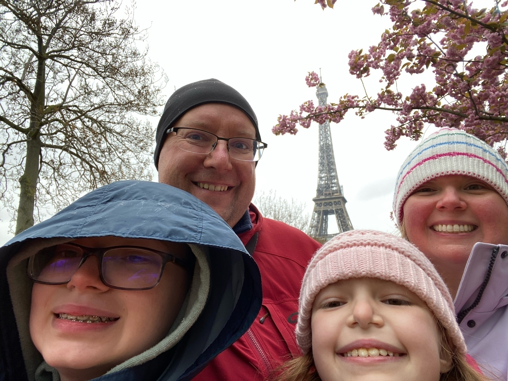
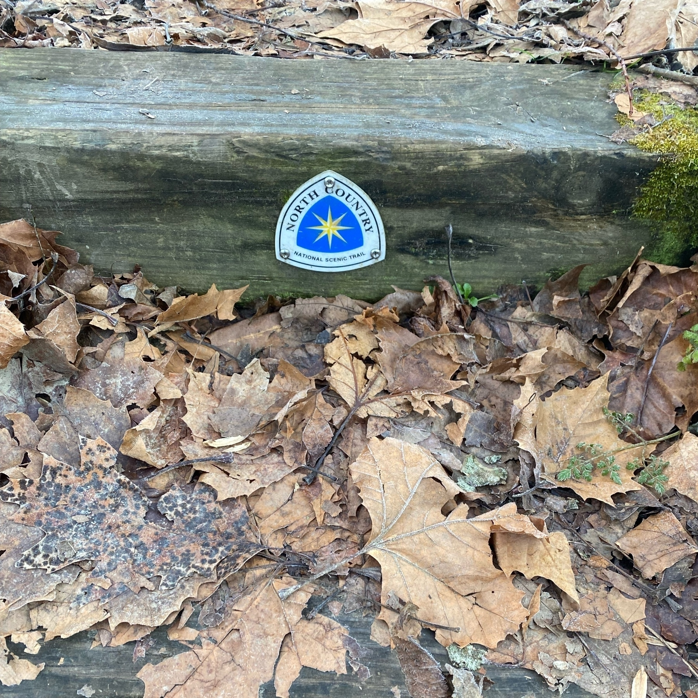
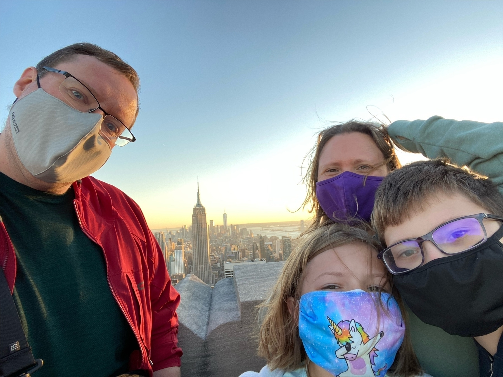
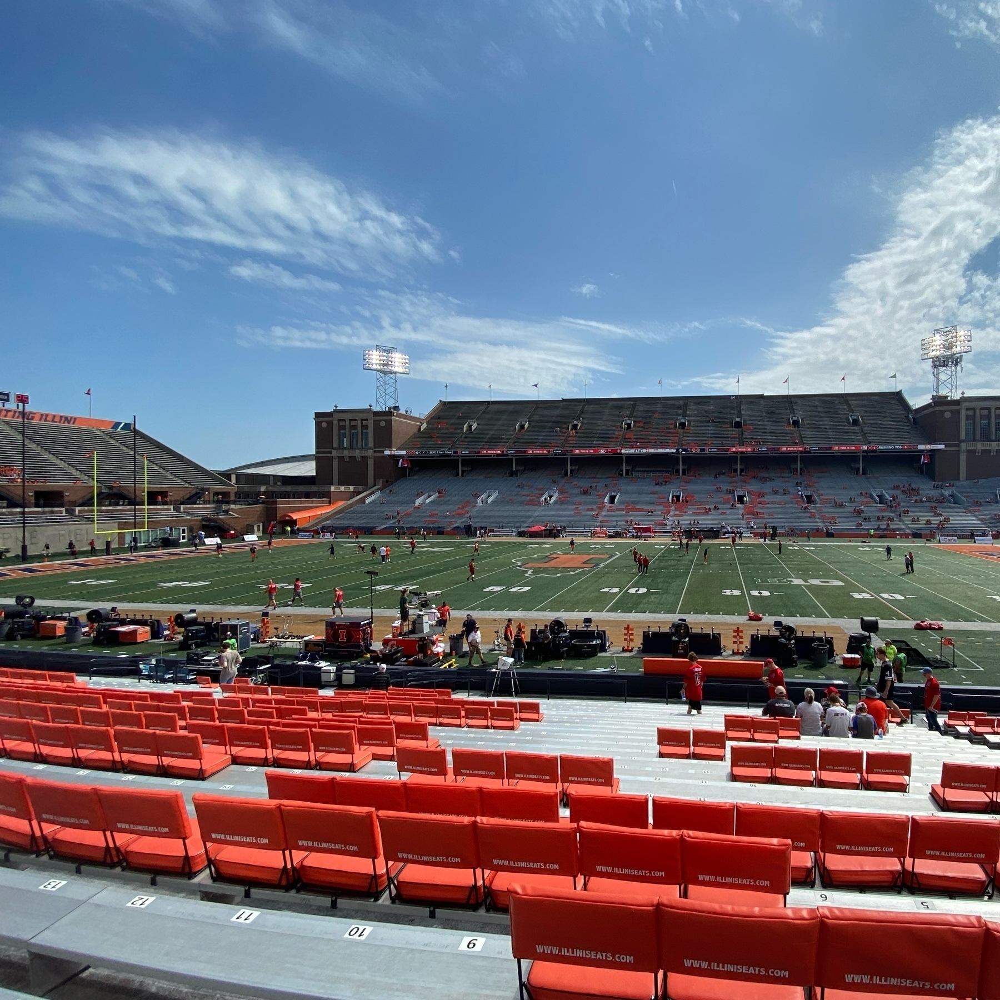
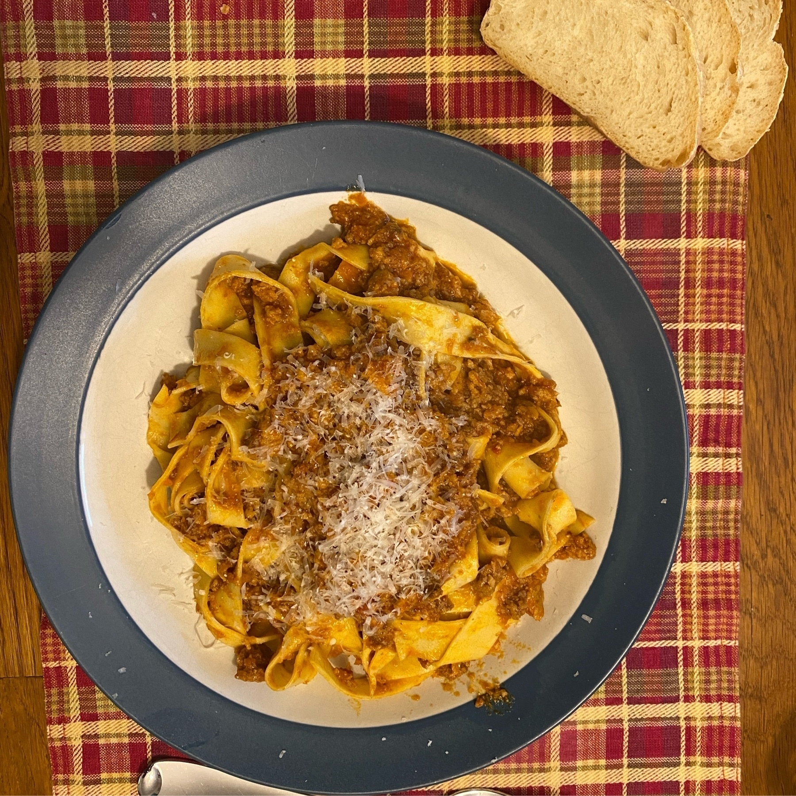
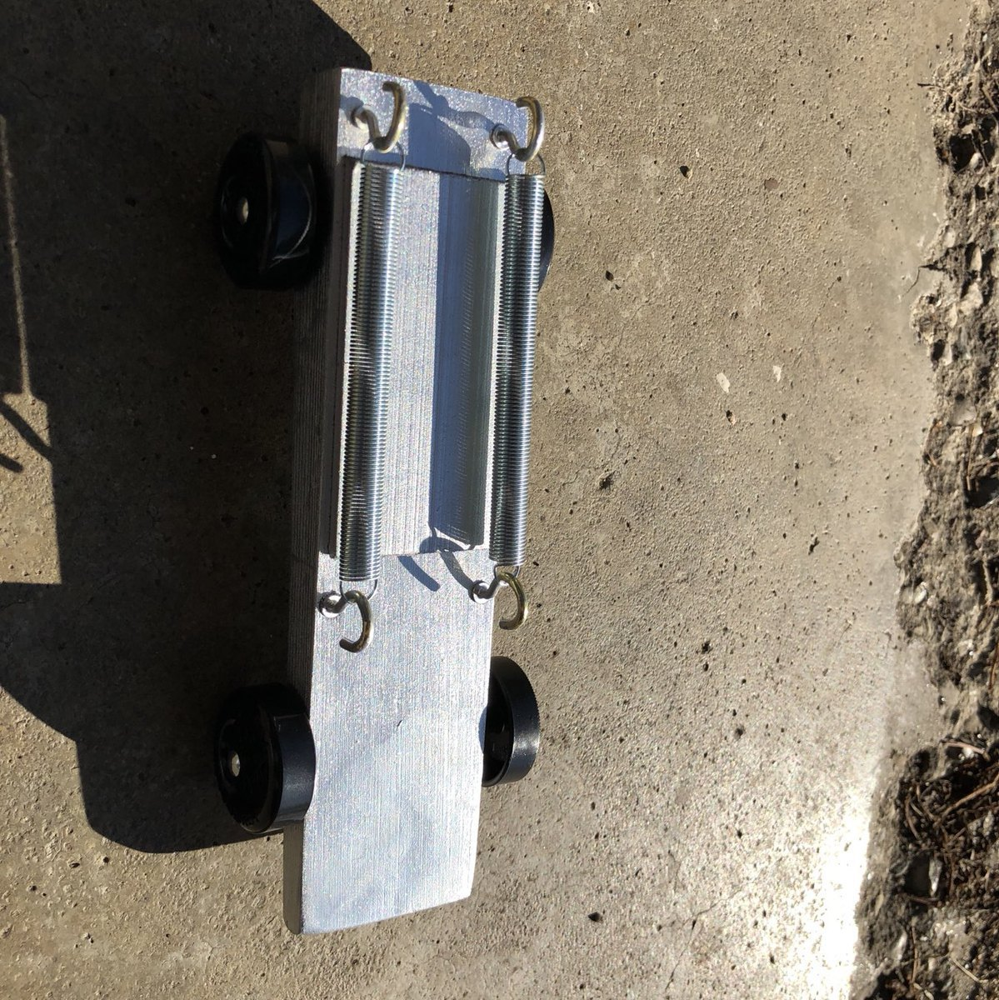

Fired up a new home for my software engineering management writings and cut it back to the bare essentials for now.
First up: As a manager, it’s your job to communicate context, even the “obvious” stuff.
Experimented with my aeropress recipe, changing the water from 180 to 185.
And was astonished by the difference. In a bad way!
Said recipe:
20 grams coffee - 8.5 on encore grinder 180-deg water (third wave classic) 100 grams water. Stir 100 grams water. Plug, wait 2min Plunge. Fill with hot water
Let's talk about intent
In a recent life, I used to joke that I was in charge of all the “creepy stuff” at a Marketing Technology startup.
I was a product manager in charge of things like identifying anonymous visitors, intent (more on this soon) and advertising targeting.
I helped build systems which would take an ip address, triangulate it between different sources of identification and settle on what company or account to attribute it to in a world at the time where most everybody was working from home.
Along the way, I talked with lots of providers of third-party identification and intent about what they had and how they do things so we could integrate it into our own systems.
I’m not in that world anymore, and don’t particularly care to get back into it, so let’s talk a bit about how it all works. And why this dude is about to have a bad time - even if he’s right about a lot of it!
Background
So, for those not deep in this space, let’s talk about marketing.
Marketers at Business To Business (B2B) startups - newish companies, largely fed by venture funding, and largely selling to one another - are increasingly tied to sales teams and revenue numbers as part of an overall Go To Market (GTM) strategy (this space loves their acronyms).
As part of that, sales hunger for leads - folks to talk to about buying their software or services. And sales drives revenue, and revenue drives venture funding and so forth. When it’s working well, it’s all a very fun and somewhat virtuous cycle.
So a lot of marketing has become sales assistance and support as a primary driver. There are still some folks doing squishier “brand awareness” marketing but they’re few and far between.
Marketing works to drive folks to their website and offerings through content, or advertising, or social media posting.
Once those visitors land on the site, in order to turn them into sales leads, they need to be identified.
One way to do this is through what’s called “gated” content - things like ebooks, reports, templates and such that require a visitor to leave an email address and various other data to get access to the content.
The other way is to try and tease out who the visitor is using things like third-party cookies or their ip address to try and unmask them to one degree or another.
Then you can reach out to these companies to try and set up a proper sales call.
In addition to these first-party sources of leads, there also exists a universe of third-party “intent” offerings that can be used to build lists for sales teams to try and do cold outreach to, or to power Account Based Marketing (ABM) programs of advertising.
These platforms - Bombora, 6Sense, Demandbase, etc - do the same anonymous identification I mentioned earlier, trying to tie an anonymous visitor to a company. Then they look at the pages or sites they’re visiting and attach that visit to various terms or keywords.
And they can also tie the company identification to lots of sources of company firmographic (location, size, revenue, etc) data to filter lists of companies by.
So, they can make it so you can say things like “Show me all the companies with revenue above $50 Million in San Fransisco that have looked at pages about content distribution” and then you can hand that list of companies to your cold-calling/emailing team (typically called Sales or Business Development Representatives) or use them for advertising targeting using platforms like Terminus.
Many of these intent platforms will also calculate things like “spikes” or “surges” which are intended to indicate a change in the consumption of things about these topics.
The problems with intent
Now that we have the background out of the way, here’s some of the ways this can go wrong.
A lot of the data sources behind this are shared between providers. They’re all essentially using the same blocks of ip addresses and the same wells of third-party cookies and drawing intent from the same set of media partners and the like.
For the company identification, they’re making guesses based on various probabilistic algorithms across all these different data sources. Sometimes these guesses are really good! Sometimes, they are very wrong.
These guesses got a lot worse once the pandemic hit and everybody started working from home and were no longer tied to corporate networks in many cases. Additionally, a lot of internet usage is done through personal email logins rather than business email logins, so many of these sources have your gmail address and not your bigco.com email email address. These platforms and providers have to build bridges between those.
That’s before you get into coffee shops and working spaces and VPNs that muddy the IP data even more.
Finally, the third-party cookie data is also increasingly shrinking in relevance. Those cookies only work in Google Chrome these days and won’t for much longer.
When you’re targeting advertising off of this data, it’s fine. You’re wasting some of your advertising budget, but nobody gets all that upset about it. It’s weird when you see a LinkedIn advertisement for something that isn’t a great fit for you, but most folks don’t think much about it.
The problem you run into - and many of these platforms are starting to run into this problem now as many of their customers look for software subscriptions that they can cut - is when you hand this same data over to your sales team.
Once your sales team is calling or emailing folks cold from them visiting your site or their showing some level of “intent” about some topic or another, that can be a different story. One or two misses of identification and many sales users of these platforms write off the entire endeavor.
If you clicked through that LinkedIn post earlier, he mentions that he’s talked to customers of these platforms and didn’t find anybody all that excited about them. That’s largely feedback from sales teams which have likely been burned repeatedly by either bad account identification or flaky levels of “intent” being shown (where one or two page visits might be enough to “spike”).
As a final bit of foreshadowing, this is all hazy and sketchy at the company level of the data. I’ve looked at them and spot-checked a lot of them - they’re bad and inaccurate about the company identification everywhere. And if they’re not, they’re extremely limited to company-owned IP addresses and sure-fire identities meaning you have lots of holes and not a lot of useful data to work with - quality, but no quantity.
When I cross-compared many of these services for company identification against things like internal signals, the best match rates I found was less than a coin flip for accuracy. Maybe they’ve gotten better in the last couple of years - but the world’s been making it harder for them, not easier.
Getting personal
That linked LinkedIn post earlier also mentions launching a new thing that doesn’t just identify the company making a visit or showing intent, but the individual doing so.
I’ve talked with a lot of lawyers in my previous role … and that’s not going to fly if you’re doing any business or seeing any visitors from Europe - or California.
Privacy laws such as GDPR and CCPA mean you’re taking on a lot of legal liability when you start tying together personally identifiable information (PII). Even the company level identification we’ve been talking about so far often involves sweet-talking lawyers to get things across the line.
If you’re going to go down the PII rabbit hole and try to uncover the precise individual doing activities, you’re inviting a boatload of lawyerly attention the second you get big enough for them to care.
Not that I think you would!
Because, as mentioned earlier - the folks who want the individual level are sales users. Everybody wants the Glengarry leads, after all.
Today’s company-level intent providers are already struggling with coverage, misidentification, and eroding trust.
Now imagine you try to figure out who exactly at those companies are making this activity. And imagine some Sales Development Representative somewhere fires off an AI-generated cold email outreach or picks up the phone and gives them a ring before they get ahold of somebody that doesn’t match.
How long do you think they’ll keep doing that?
How many times do they get wrong numbers, angry people, and coffeeshop strangers before they stop using it entirely?
From my experience, that number is quite low … and my educated guess is any service trying to dig out individuals is either going to trigger that experience frequently - or, if they lean into ironclad identification, there’s not enough meat on the bone to be valuable.
And that’s all before the lawyers get hold of you!
Godspeed, my dude, and good luck - you’ll need heaping amounts of both.
Wait. So, what should I do?
If you’re a consumer like me and want to opt out of this world as best you can, use something other than Chrome, turn off third-party cookies, run a VPN and laugh.
If you’re a marketer using one of these platforms, check with your sales teams and see how they’re finding the accuracy suits them. If they’re happy with what these platforms are unearthing, keep going! I’m not suggesting you stop doing stuff you and your team think are working!
If they’re not happy, though, it might be time to try a different approach to marketing. Identify your audience, talk to them, be curious, try to be helpful! Don’t go looking for “intent”, look for ways you can be helpful and honestly help people. And then marry that with intent sources that are in your control - gated form fills, newsletter subscribers, social media followers (well, less this bucket), that sort of thing.
But that’s me. Typing this behind a VPN …
Stay safe out there, folks!
Life is funny sometimes.
Was laid off from a company ~two weeks ago.
Picked up a consulting client and the engagement starts today.
They’re located in the exact same coworking location.
At least I know where the coffee is!
Spending the evening rummaging through my old personal projects to see if there’s anything interesting and salvageable in here.
Some folder names:
- landslide
- la-jetee
- cybernetic
- garbageman
- playbook
Can only vaguely remember what some of those are …
I was laid off today, but before then I had written down as a goal for this year to build at least two non-day-job income streams.
Thinking:
- Custom travel itineraries
- Cookies
- Writing something about engineering management
Have time now to make progress on some of these alongside job applications.
A parting message from the dwindling moments of 2023.
Happy New Year, folks! Let’s make it a good one with plenty of cheer.
Day 12 of the 12 Days of Christmas Cookies, featuring my daughter’s favorites: Black and White Rolly Balls.
Another family recipe that I might write up later - but these are dangerously good and might not last for the big man in a few days.
Now, a break before prepping cinnamon rolls on the Eve.
Nearing the end of my Twelve Days of Christmas Cookies - and still so many cookies I’d like to to make!
For Day 11, I made shortbread in honor of a trip to Edinburgh I’m planning for next year.
Surprisingly addictive.
I’ve baked cookies for ten days in a row as part of what I’m calling The Twelve Days of Christmas Cookies.
Tonight: Chocolate Peppermint Snaps from King Arthur again.
I think I made them bigger than the recipe expects - but I probably like them softer anyway.
Also used white chocolate chips.
Day Nine of my Twelve Day of Christmas Cookies!
Ginger molasses cookies - another King Arthur Flour recipe, but a family favorite.
www.kingarthurbaking.com/recipes/s…
Used a bit more flour and chilled the dough which made shaping way easier.
Twelve Days of Christmas Cookies! Day Eight!
Cocoa Kisses! From another family recipe, and a full batch baked this time as a) a favorite and b) close to time to deliver a batch of cookies to folks.
Dusted the cookies instead rolling them in the sugar. I like how they look snow-covered.
Recipe: Cocoa Kisses
As part of this Twelve Days of Christmas Cookies shenanigans I’m undertaking, I occasionally slip in a family recipe.
In this case, these chocolate cookies have a Hershey’s Kiss in the middle and were one my favorites growing up - though dangerous because they looked very similar to another cookie that had a cherry in the middle (yuck!).
These require a bit more work than most of the cookies I’ve been making, but are still mighty tasty.
Cocoa Kisses
Ingredients
- Two sticks of salted butter*
- 2/3 cup of granulated sugar
- 1 teaspoon vanilla extract
- 1 2/3 cups all-purpose flour
- ¼ cup cocoa powder
- 1 cup finely chopped pecans
- 1 package Hershey’s Kisses
- Confectioners sugar for coating
Method
Cream together the butter, sugar and vanilla.
Mix together the flour and cocoa.
Add to creamed butter.
Slowly mix in pecans.
Let the dough chill in the fridge for one hour or so.
Scoop out ~a tablespoon of dough, flatten it out and wrap completely around a kiss candy.
Shape into a ball and place on an ungreased cookie sheet. They don’t spread much, so you don’t need a lot of space between.
Bake at 375 Fahrenheit for 10-12 minutes.
Let cool slightly and move to a wire rack. Let cool completely before rolling in or dusting with confectioners sugar.
- - If you only have unsalted butter, throw in a ½ teaspoon of table salt. If you have espresso powder handy, a pinch of that doesn‚Äôt hurt, either.
Twelve Days of Christmas Cookies! Day Seven!
Gingersnaps!
Recipe: www.kingarthurbaking.com/recipes/g…
Had this saved for a whilee but had never made it before - mostly because I don’t use shortening a lot.
The batch for tonight I burned the bottom of a bit, but still tasty.
Twelve Days of Christmas Cookies!
Day Six!
Mexican Wedding Cookies. This time, a family recipe.
Notes:
- Wait a bit before rolling in sugar
- Maybe less food coloring next time
Tastes like nostalgia!
Recipe: Mexican Wedding Cookies
As part of The Twelve Days of Christmas Cookies thing I’m doing, I’m mixing in a few family recipes.
This is our version of Mexican Wedding Cookies.
I always remembered them as being the one green cookie we made each year - though they don’t taste anything like green. It’s just food coloring after all.
In doing a bit of research on the name, this is a style of cookies originally called Russian Tea Cakes, but the name changed (and splintered) in the post-WWII Cold War period.
Mexican Wedding Cookies
Ingredients
- Two sticks of butter
- ¼ cup of granulated sugar
- 1 teaspoon vanilla extract
- Green food coloring
- 1 cup finely chopped pecans (or other nuts)
- 2 cups all purpose flour
- Confectioners sugar for rolling post-bake
Method
Preheat oven to 325 Fahrenheit.
Cream together the butter and sugar.
If you’re new to cookie baking: “creaming” means beating the butter and sugar together until it gets kind of light and fluffy. A mixer of some sort makes easy work of it, but you can break out a wooden spoon and make it happen eventually.
Add the vanilla and a bit of green food coloring.
Mix in the flour and chopped nut meats.
Roll the dough into 1-inch balls (a cookie scoop really helps standardize things).
Bake on a ungreased cookie sheet 18-20 minutes. They don’t spread much, so you only need an inch or so between them.
Let the cool for a few minutes before rolling in confectioners sugar while still warm.
Twelve Days of Christmas Cookies! Day Five!
Peanut butter cookies! Cross-hatched and everything!
Dipping back into King Arthur for the recipe (because they‚Äôre solid, in grams, and haven‚Äôt let me down): www.kingarthurbaking.com/recipes/c…
Peanut buttery!
Day 4! Twelve Days of Christmas Cookies!
Today, I broke out the disher and made some chocolate cookies, again with a King Arthur recipe (I find theirs to be pretty straightforward and good).
www.kingarthurbaking.com/recipes/c…
Missing espresso powder, but still tasty!
Twelve days of Christmas cookies, Day 3!
Good ol‚Äô chocolate chip. Trying this recipe from King Arthur Flour: www.kingarthurbaking.com/recipes/c…
Didn’t have enough corn syrup, so I swapped in molasses for the remainder.
Worked!
Twelve days of Christmas cookies, Day 2.
Sugar cookies courtesy of Serious Eats: www.seriouseats.com/soft-and-…
Three baked for tonight, the rest headed into the freezer for baking later in the month.
Notes: Not bad. Could probably cook a little shorter.
Twelve Days of Christmas Cookies. Day one.
Eggnog Snickerdoodles. Recipe from NYT Cooking. Couldn’t find run extract anywhere, so went with actual rum (Smith and Cross).
Really tasty.
Settling in for my 35th stadium and school in my quest to see a game at every FBS football program. Today it‚Äôs Missouri at Arkansas for the totally-not-made-up Battle Line Rivalry. üèà

Today was a good reminder at how effective exercise is at improving my mood.
I’ve been a bit in the dumps lately (nothing specific, just ennui/malaise), but the moment I finished my first set of deadlift today it was like it all melted away.
Looking forward to getting in a run tomorrow, too.
I suspect I might be more of a Cal person than a Stanford person after seeing games at both back to back today.
Stanford is just so, and park-like. And maybe a quarter full. It’s objectively great in amenities and symmetry and fit and finish, but it lacks soul.
Except the band. The band is great.
I missed a whale of a game when I had to leave stop one for the day (sorry Cal). But howdy from a 7-7 game in the second quarter at stop two: Washington at Stanford. This is the 34th stop in my quest to see a game at every FBS college.

Folks, Cal is the most fun college game atmosphere I’ve been at in a long while. I hopped off the BART, walked uphill through campus to a beautiful stadium nestled in a canyon with a chill, fun crowd vibe.
Just awesome.
Kind of bummed to leave early to make my next kickoff.
It strikes me as very Cal that kickoff is being delayed by a sit in protest of some sort at the 50 yard line.
Hi from California Memorial Stadium and today’s first stop - and my 33rd FBS stadium visited in my quest to see a game at them all. Settling in for a bit of USC @ Cal before I hightail it over to Palo Alto for my second stop today.
Rain and wanting to get back home after a week-long family road trip meant it was a quicker visit than usual, but marked off my 32nd trip to an FBS football home stadium today with Akron at Bowling Green.
Best MAC facility I’ve been to so far. Including a bucket of mini donuts!
Ran my second 5k this morning - right down the road at Fort Ben State Park.
Shaved three minutes off my last one, but still a little bit to go before I break 30 minutes.
Had never run before I started in March - and will keep at it. Maybe next year, I’ll run the half marathon here …
üèÉüçÅ
Howdy from stop 31 on my quest to see a game at every FBS football school. Settling in for a weeknight game of Jacksonville State at Middle Tennessee State.
Second CUSA visit (WKU), second TN visit (Vandy).
Next trip: Out west.
I started running - for exercise at first, and increasingly for fun - earlier this year.
I spent some time NYC last week, and running there - up the East River Esplanade and under the Brooklyn and Manhattan Bridges in my case - is kind of magical thanks to the views and the surrounding bustle.
üèÉüóΩ
Went on a trip, finished reading “Station Eleven”. Got kinda sick, tested positive for Covid after all these years.
Now watching “Station Eleven,” because that tracks.
Hi from West Point and stop 30 on my quest to see a game at every FBS football school for Delaware State at Army.
Of note: Highly recommended pregame. Nice to have access to military hardware for such things …
Doing a lot of trip planning lately - trying to cram in the family vacation list now that we have one kid in high school - and finding AirBnBs to be a bad deal these days.
Hotels are better and cheaper almost always.
Greeetings from sunny San Diego and Snapdragon Stadium - stop 29 on my quest to see a game at every FBS college. Tonight’s game is Idaho State at San Diego State.


I’m now rotating four different notebooks on a daily basis:
- Log of gratitude and wins and goals (one page a week)
- Daily task book
- Work todos and notes
- Evening News
I would try to consolidate - and might combine some of this - but I also like each of things having their own home and purpose.
I bought a notebook recently, intending to try writing Morning Pages - three pages of whatever first thing in the morning.
But the notebook was so handsome that I couldn’t bear to fill it with never-to-be-read drivel …
So, it’s for Evening News instead. At least one page a day of how the day was.
What we call AI today is basically scalable Fiverr. About the same quality, just faster and cheaper. Pretty much the same work tasks, too.
Reflecting on visiting Gettysburg as a grown adult with kids in the year of our lord 2023
As a kid, we visited Civil War battlefields like some folks hunt Pokémon. We stopped at the ones along the way, and the ones that were a bit out of the way.
We did the Shenandoah Valley, all four near Fredericksburg (Federicksburg, The Wildness, Spotsylvania Courthouse, and Chancellorsville), Shiloh, Vicksburg, Brice’s Crossroads, Antietam and any others which we ran or planned across.
My Dad subscribed to Civil War Illustrated. Ken Burns “Civil War” series was a hit on PBS.
I ate the stuff up and to this day can name generals on both sides at various battles and engagements and whatnot.
The big kahuna, though, was always Gettysburg - the high water mark of the Confederacy and a huge, sprawling three day engagement across Pennsylvania peach orchards, wheat fields, round top hills, and dens of devils.
I remember going as a kid and doing the tour - I can’t recall if guided or self-directed - and stopping at every monument and plaque and reading every stitch.
I remember it all pretty fondly - in case you couldn’t tell.
Earlier today (note: I wrote this on June 19, 2023), I took my kids to Gettysburg.
And I left feeling differently - or maybe I arrived thinking differently and the experience reinforced it.
There’s a new visitors center now - all shiny and corporate. It feels like there’s more knickknacks in the gift shop (which feels huge compared to other national park service properties). There are tour companies out the wazoo - the helpful ticket lady could get you a private one if you wanted. There’s an efficient two theater system to churn visitors through the Morgan Freeman-voiced film and into the Cyclorama - a 360-degree painting that’s been there for a hundred years or so, now gussied up and in a custom-built theater.
This is all kind of expected from any of the National Parks big hitters. We’re heading to Independence Hall tomorrow and I kind of expect the same.
It doesn’t match the shabbiness and livedinedness of my memory. The Gettysburg battlefield in my head is more DIY, more bespoke, more haunting than it is Haunted Mansion (author note: I adore Haunted Mansion - just not here).
Some of that is probably the old man growing inside my 40+ year old frame. Kids today and all that.
What I’d like to talk about more is how I view things - like the Civil War itself - differently these days.
I grew up in an era and region that mythologized Robert E Lee and Stonewall Jackson more than a little. Reluctant fighters for their native state alongside their fellow Virginians. We never talked about their slaves or their horrifically racist views. Lee was a kindly gentleman - hell, he had half a college named for him! And Jackson to this day has a state park named after him in my (and his) native state of West Virginia.
And the start of the self-guided car tour at Gettysburg shortly gets into row after after row of monuments to men like these - men fighting against their government not for their states, but for the continued legal ability to own other people as property - and to continue to expand that ability to new territories forevermore.
I didn’t want to look at their monuments. I didn’t want to look at the statues of Lee, or for the boys of North Carolina or Mississippi or Louisiana. And I didn’t want to get photos of my kids next to them either. I don’t want to gaze upon these monuments to their rightfully lost cause of human suffering into perpetuity.
Things I’ve said lately that seem to resonate with people. Some of these might be stolen, but I can’t recall from where:
- Perfect is the enemy of done
- Assume positive intent
- Progress happens slowly then all at once
- That which must be done eventually, should be done immediately
I began running on a whim - running between electrical poles.
I ran in rain, cold, with knee pain, through therapy for that knee, and everything else before running my first 5k this morning.
Each time, I take a selfie when the run is done.
This is first and last of those.
Think I’ll keep doing this.
Every time I visit NYC, I like it a little more. Had a great weekend with my daughter, even with the rain.
Finished reading: Tomorrow, and Tomorrow, and Tomorrow by Gabrielle Zevin üìö reminiscent at times of Kavalier & Klay, but slighter. Or perhaps just my memory of K&K
Finished reading: A Desolation Called Peace by Arkady Martine üìö‚Ķ Fun to revisit these characters and environment. And great themes around colonization and collectivism.
I’ve been trying to get three runs - still kind of walk/runs for now - a week.
First this week was rainy. I went anyway, and did 2-1 run/walk (best ratio yet).
This morning was cold, but I went anyway. I went longer, still 2-1 for 3.75k … still building for a 5k in April/May.
The Shipping News
One of the more powerful things I do at my new job is at the end of the week I update a running document I call “Shipping Department News”, which is a list of all the stuff we deployed to production in the week.
It’s a bulleted list, and each item has a little description of what it does and why it matters.
Sometimes, there’s a screenshot or two or a humorous aside.
There are also a section with status and planning updates for upcoming stuff.
This document takes me 15 minutes or so each week to update, but it has so many benefits:
- We don’t have to bog down meetings with a lot of project status updates, since that’s all in the document
- When we do an external product update, we have an easy review of what we’ve deployed lately that can feed our narrative
- It emphasizes momentum and helps keep the company aligned on our direction
I mention all this because it‚Äôs a neat work idea you should totally steal if you‚Äôre in a similar engineering/product leadership sort of role, obviously. I’ve gone back to this approach four times in my career and it has killed each time.
But I also mention it because as I sit at my home office desk and reflect on the week, I’m thinking about stealing this idea for my own life.
I already journal each day - one daily page with a schedule and todos, and another running journal which I start my day with what I’m grateful for and end it with the three big wins (aside: I should talk more about what that looks like someday soon, too) - but am thinking about a similar weekly wrap for my life.
This week, for instance, would be something like:
- Appeared on a podcast for work: This is the first podcasting thing I‚Äôve done in close to (if not more than) a decade. And it turned out great, and I found it more fun than I remembered. It’s something I might try to do more of.
- Led a product webinar at work: I’ve been watching other folks give roadmap reviews for several years now, and had a great time hosting one myself this week (I might find a non-gated version of that down the road).
- Dropped below 275 pounds: I’m down ~25 pounds since early November and it’s felt sustainable along the way. Bounced back up slightly after that low, but it’ll come around again.
- Started constantly running: The week before, I started running a few times a week - just running between every other utility pole for now - but I kept at this it week. My last run was the first one where I wasn’t maxing out my heart rate the whole time. This week, I also got a goal of running a 5K in May lodged in my head.
- Had lunch out with my wife twice: Once for Valentines Day and once again today.
- Got a janky part of our fence fixed
- Replaced a busted bathroom faucet on my own
- Finally made it back to my weekly trivia night
- Stayed out entirely too late last night to go see Ant-Man
I won’t always share this sort of update publicly - perhaps never again. But I’m also willing to bet some day in the future I’ll come back to this entry and read this and smile.
Not every week will be this good, either.
But I think this week is the one that will start the string. Once a week, writing down the big things that happened in my life - so I can remember, stay aligned, and emphasize my own momentum.
Hope you’re having a fabulous Friday (or whatever day it is when you happen to read this) out there.
shuts work laptop for the long weekend
I’ve been doing a daily meditation lately. Not long, but helpful to me.
Mostly to keep me from burning bridges which I emotionally wish to burn, but ultimately does no one any good - even me.
So. Many. Bridges.
So little good.
I notice the urge, and let it go. So it goes.
So, since early November, I’ve been watching/tracking what I eat. And I’m down ~23 pounds.
A few weeks ago, I decided to pony up for a personal trainer for six weeks.
And I just walked back in from the closest thing I’ve ever been able to call a “jog”.
And I kind of liked it?
Finished reading: The Caledonian Gambit by Dan Moren üìö
Fun read as far as the words go, but the audiobook grated a fair bit and I had to power through. I guess the Scottish accents shouldn’t have been a surprise …
Finished reading: The Stone Sky by N. K. Jemisin üìö
Finished reading: The Obelisk Gate by N. K. Jemisin üìö
Finished reading: The Fifth Season by N. K. Jemisin üìö
I had read and enjoyed the Inheritence Trilogy a while back, and dipped back into Jemisin’s Broken Earth Trilogy with this on audiobook over the new year.
Wow.
Favorite places for nature very near Indianapolis
I read a blog post recently by a fellow resident of Indianapolis who’s having a hard time lately and found themselves lamenting the lack of places for “Forest bathing” in Indianapolis (and cities like it).
It seemed familiar to me - as one of the ways I reset myself often is to go for a walk in the woods. Sometimes I go far afield - down to Brown County, or many a Indiana state park.
But more often, I stick around home.
So to help my internet friend out (should they ever see this), and to put a positive spin on things, here are places in and around Indianapolis that I’ve been able to find a quiet spot, sit a spell and look at trees.
In rough order of recommendation:
- Fort Harrison State Park: A former military installation and World War II prisoner of war camp, this state park over in the Lawrence corner of Marion County features a handful of trails. For the best shot at solitude, take the Fall Creek Trail and alight on a bench along the steps up the bluffs next to Fall Creek, or pick a bench on the Camp Creek Trail. There are longer trails at the park, but these two are absent mountain bikers. There is an entrance fee, like all Indiana State Parks (a grumble for another day), but if you live in Indy, the $50 annual pass pays for itself in no time. Oh, and if you look around a bit, you can probably find back entrances to the park to skip the fee entirely - the best one is near the intersection of Fall Creek and Boy Scout Road.
- Holliday Park: There’s a surprisingly gnarled set of short trails in this park alongside the White River west of Broad Ripple. Difficult to get a long hike in, but there are spots near the river that are tricky to get in or out of where you can grab a few minutes of peace (before grinding your way back uphill).
- Ritchie Woods Nature Preserve: Our first foray out of Marion County - but barely. Just north of 96th Street and off Hauge Road, this small Fishers park has a small network of trails. Wandering off to the trails rightward into the woods will get you off the beaten path pretty quickly.
- Skiles Test Nature Park: Another patch of woods. This one has a primary path running through it (which connects to the Fall Creek Greenway … and then to that back entrance to Fort Ben I mentioned), and also a slew of spurs off and into the woods proper.
There are more than those four. But those are my four go-tos when I need to get out into nature for a bit.
Always interested in learning new places, too!
Finished reading: A Closed and Common Orbit by Becky Chambers üìö
Really good moments - dampened only slightly by my forgetfulness of the book it’s a sequel to.
Recently finished reading: Lock In by John Scalzi üìö
Nothing earth-shattering, but a fun read over the holidays.
The biggest thing I learned this year:
The mental strain from sticking with a bad situation robs you of the energy for so many impactful things in life.
If something doesn’t feel right, quit sooner.
When I was a kid, I would doodle by splitting a page into a series of triangles.
Tried it a bit today and kind of like the result. Scanner didn’t pick up some of the lighter lines.
Debating if I keep fiddling with it or leave it as-is.
Introduce yourself with 5 TV shows:
- Better Off Ted üëîü•º
- X-Files üëΩ
- Scrubs ü©∫
- Good Eats ü•ò
- Rick Steves Europe üåç
On November 6, I stepped on a scale at home and had a 298.5 staring back at me.
Since then, I’ve watched what I ate, made tweaks and restarted daily walks.
Also started weighing myself each day - as a reminder to pay attention.
Early, but close to dipping back below 280. üéâ
At my favorite work-from-a-coffee shop place (Porter Books and Bread), the Endless coffee comes in a thrifted coffee mug.
I smiled at the one I randomly got today.
First time I carved the turkey ahead of time - roasting it in parts - and it was great!
And I made turkey stock with the carcass last night while it dry brined, which made the gravy and stuffing fantastic.
Might stick to this technique in the future. Low stress, great taste!
Pies (pumpkin and pecan) are finished, and the turkey (in parts) is in the the oven for round one.
Brief break and then it’s time to prep what goes in the oven after the turkey comes out (stuffing, sweet potatoes, carrots, rolls).
Stop 28 on my quest to see a game at every FBS college hit South Bend for BC at Notre Dame.
This season finale also had some very special guest stars (and not just Touchdown Jesus).
My home for the next couple of hours as I’m running inspection for a robotics tournament.
I ask the teams some questions and then make sure their robot fits in the contraption to the right.
After the last two years or so of feeling stuck, this week’s burst of activity - while still taking time to care for myself with walks and mindfulness and watching what I eat - feels almost magical.
It’s unreasonable to expect this every week, but this week felt really good.
Two weeks into a new job, and this week I:
- Shipped new code to prod
- Finished a draft of our roadmap
- Did an intro that closed a sale
- Had a chat with every team member
- Sent an internal newsletter
- Went for a walk each day
- Meditated each day
Tired. But a bit wired, too.
Finding Mastodon folks and following them here is a bit tricky, but once you get past that it works great!
Fun to add some fresh and some familiar folks to my timeline in recent days.
Twitter’s been a large part of my career and life, but it’s time to say goodbye.
In the coming days, I’ll be downloading my Twitter archive, hosting it, then deleting everything.
I’m over at micro.blog/v and followable in Mastodon via @chris@micro.chrisvannoy.com
Settling in for the Great Pumpkin after a bout of trick-or-treat and a full first day at my new job.
Said new job, for the non-LinkedIn folks: VP, Product & Engineering at The Juice üßÉ (@TheJuiceHQ over on Twitter, thejuicehq.com otherwise).
Tired but still stoked.
I start a new job tomorrow.
I’m preparing like it’s the first day of school.
Feels like that, too.
Giddy with excitement!
Watching games at UCLA and USC on back to back nights brings some observations - nothing to do with the games themselves, but atmosphere.
USC is like watching a show. A really well put together performance with all the bells and whistles.
UCLA is like a backyard BBQ.
Both fun
Hiya from Los Angeles Memorial Coliseum for Arizona State at USC and stop 26 in my quest to see a game at every FBS school.
I’m (practically) 20% done!
Also: Hi Dad. Nice hat!
Howdy from the Grandaddy of Them All, The Rose Bowl!
Stop 25 on my quest to see all the FBS home stadiums.
With another guest appearance from my Dad!
Excited for Washington at UCLA, too!
Good morning from the last day of the CubingUSA Great Lakes Championship!
Benjamin is already done with his first event with two more personal records:
3x3 Single: 13.21s 3x3 Average: 15.64s
Those are both huge improvements.
Suspect we’ll be around for the second round
Finished our first day of competition with another pair of personal records, making Benjamin 6 for 6 - a new personal record single and average in each event.
4x4 Single: 1:03.09 4x4 Average: 1:08.23
Tomorrow: 3x3, 3x3 One Handed, and Pyraminx
Two events in and we’re 4 for 4 in competition personal records
New 2x2 single: 4.83s 2x2 average: 6.25s Skewb single: 7.11s Skewb average: 11.25s
By the way, for those not in the cool kids cubing club, this is ‚ÄúSkewb‚Äù en.wikipedia.org/wiki/Skew…
Greetings from the CubingUSA Great Lakes Championship in Port Huron, MI.
We (well, Benjamin) are competing in six events.
As always, the goal is #NotLast. And maybe a few personal bests.
Coming back from Hawai`i with good coffee - and tasting it there - has forced me to tweak my brewing technique a fair bit.
Lower temperature, more coffee, better water.
Still not quite there, but much better.
And should work on my locally-roasted stuff as well.
Noodling on the idea of a course or courses (kind of booster packs) intended to help crosstrain JS bootcamp grads on Ruby and Rails. Not much past the outline stage yet, but curious if there’s anything that feels missing for that purpose and audience.
Next question for folks:
In ye olde days, coding bootcamps were cranking out junior Rubyists like crazy.
At this point, it feels like they’ve all shifted to JavaScript.
Pity.
But, for those still working in Ruby, do you hire and crosstrain JS juniors?
Or would like to?
That said, our absolute favorite meal was the Family Pack from Kona Grill House.
So great - and a great value! - that we made the effort to have it twice, including for our last meal on-island.
If you’re ever on the Big Island with ~4, go there.
I did my research before going to Hawaii and knew about poké … but came away longing for more loco moco.
Such a simple - rice, hamburger patty, brown gravy, egg - dish, but so tasty.
Oh! And mac salad. So much mac salad.
For reference, these are some of the ideas I’m considering right now for fun-size screencasts of Ruby/Rails things.
Working on a thing and could use your help:
What smallish thing about Ruby or Ruby on Rails would you value an explanation or walkthrough of?
Carving out time tomorrow morning to explain such things in (very) short screencasts.
Taking a jet lag day after returning home late yesterday from a two weeks+ vacation that hit Disneyland and Hawaii’s Big Island.
Still processing many of the experiences.
And missing the ocean and jungle already.


Final tally for the day! Benjamin:
- Set six new personal bests (out of six possible)
- Made the second round of 3x3 for the first time and had his first few sub-20s solves
- Made the cutoff for 4x4 with a solve in less than 1:20 for the first time
Fun day!
First cubing competition since the pandemic started.
Benjamin has already racked up personal bests in Pyraminx single solve (10.25s) and average (13.10s).
3x3 and 4x4 still to come, but he’s already in his element and with his people.
A work story about magical elves
An email to a client:
That custom report is generated by magic dwarves. To ensure they produce at the quality we and our customers expect, we keep them supplied with medical-grade peyote.
Unfortunately, the week you requested this report, they had run out of their supply, and given global supply chain issues, we were delayed in getting them their needed hallucinogens. This resulted in an obvious dip in report accuracy and quality accordingly.
We have apologized to them (they were quite upset, as dwarves are wont) and now we must also apologize to you as well.
Given these magic elves are now on the proper plane of consciousness, I’ve asked them to rerun the reports.
I’ll report back when they’ve finished and hopefully we’ll see results more in line with your expectations.
Really enjoying Glass.
Giving me an excuse to scrub through my photo library and pick out the good ones to highlight.
Today’s of St. Paul’s.
Great morning to get out for a quick hike at Fort Harrison to break in some new hiking shoes.
Aside: Have yet to find a bad trail at Fort Ben. Well worth the annual state park pass if you’re Indy-adjacent.
Find myself wondering if the NONULLS vanity license plate in front of me belongs to a database administrator or not.
Tempted to wait for them to come back to their car and ask …
Hi. I’m trying my level best not to read Twitter anymore these days.
Luckily, I already have had a home over at micro.blog/v for a while now. And posts start there.
I miss yinz, though. If you’re also on Micro (or Mastadon or something), let me know.
Did an overnight backpacking trip on the Bloodroot Trail at Salamonie Lake State Park here in Indiana.
Close to 13 miles over two days. Some corn fields and such in the front half, but worth it for the morning views on the way out.
Now to wait for these blisters to heal …
The thing that strikes me in retrospect about London’s St Pauls Cathedral is that it feels relatively modern - and not like a relic.
I have to remind myself that it’s from the 1600s instead of the 1960s.
Whenever I get around to writing that novel, or some future speaking gig, I think I’ve got the photo for it now …
Our day trip to Paris was a snowy April Fools Day.
Trying not to judge on our short time, but felt like traipsing through the beautiful remains of a decadent, depraved, and dead civilization. Beautiful but doomed. Might feel differently with more time (and better weather).

Happy to be home after a week spent traveling to London (and a day trip to Paris) with the family.
Planned and arranged everything myself and, frankly, kinda nailed it.
With a hat tip to @RickSteves guidebooks and videos.

Achievement unlocked!
Dinner without a single recipe.
Brown butter garlic salmon, with cucumber-tomato-balsamic salsa, lemon-basil couscous and corn with peppers, butter and honey.
Corn turned out a bit too spicy for my family, but otherwise üëç
Kids home from school and solo parenting again means you get Fancy French Grilled Cheese for lunch.
(This way I can coast on those Croques Monsieurs laurels the rest of the day)
Each year for the Super Bowl, I whip up party food for our family of four (typically making enough for a party even though it’s just us).
This year:
- Boneless wings (Buffalo, BBQ, Soy Ginger)
- Potato Skins
- Queso & Chips
- Party Meatballs
Most from scratch.
It’s been a good week.
I made an observation over the weekend.
I’m the only one making me miserable or anxious. Nobody and nothing else.
And I don’t have to make myself any of that.
So, I notice when I’m doing that, and remind myself it’s only me doing it.
It’s helping.
This is an known technique for most, but one I’m working on training myself to remember/rely on more often when making big decisions:
If it’s not a “Hell yes!”, it’s a “No”.
Since Friday afternoons are the best time to launch something …
Excited to introduce exitimpact.com
It’s a curated marketplace for Central Indiana small-to-medium-sized businesses.
Tell your friends!
I’ve lived in Indy for nearly fifteen years.
Today it snowed enough that I could take the kids (and my wife) sledding for the first time in their lives at the Fort Harrison State Park sledding hill.
Wish I’d done this sooner.
Stick around at a startup post-acquisition for long enough, and it starts to feel like the Career of Theseus.
Making tomorrow’s dinner - boeuf bourguignon - today means the house smells amazing … but I’m not eating it until tomorrow.
Assuming I can restrain myself …
“Make more things more obvious”
A goal coming out of this week’s therapy session.
Now I need to figure out how to turn that into specifics …
Volunteering at Second Helpings, a beginner's guide
Toward the end of 2021, I started itching for a way to get out of the house and do some good.
Over the course of the current pandemic, I got more and more into home cooking and found that time spent in the kitchen - even doing prep work - really gave me a considerable peace of mind, so I figured I’d concentrate on ways I could do more of that and help others while I was at it.
After poking around at various charity organization listing sites - aside: most of these are truly dreadful for finding volunteer opportunities - I remembered an organization I’d already give money to - Second Helpings.
Second Helpings is a food rescue, hunger relief, and culinary training organization here in Indianapolis. They currently transform more than 300,000 pounds of rescued food into around 150,000 meals each month. These meals are then delivered to partner charitable organizations that get the meals to those that need them.
I had donated money in the past and was vaguely aware of them through donation drives run by IndyHackers as part of their yearly Holiday Social.
So, I signed up to volunteer, went through some training and have made it in twice now to help out. One time doing meat chopping and another making sandwiches.
Below are some thoughts and tips from the experience so far:
- They run a really good onboarding program that involves a zoom call, filling out a few forms, and a quick tour on your first shift.
- You sign up for four-hour shifts across a number of different functions. Everything from offloading donated goods, to handling reception, to chopping meat or stirring pots.
- Of the two jobs I’ve done so far, sandwich making is a far tougher job than meat chopping. Even if meat chopping involved a slight cut on my thumb and a nice callous on my knuckle where the knife rested. There’s way more steps to making sandwiches than you might think.
- There are two entrances: One in the front of the building and one in the back near where you park. As a volunteer, you want to buzz in through the back door.
- Right now, everybody’s wearing masks, and everyone supplies proof of vaccination, so it feels pretty safe all things considered from a pandemic standpoint.
- You register for a time slot and job to do using online software, and then sign in to that software once there so they can track hours worked and such - likely useful if you, say, have a certain number of service hours you need to reach, but handy to keep a running tally for yourself regardless.
- Knives, aprons, gloves, etc are all provided … just bring yourself at your volunteered for time and job and you’ll have what you need.
- You have to wear closed-toe shoes, and a hat or hair net … and a chin net of some sort if you’re rocking a beard. This is actually one reason I started shaving again recently.
- Everybody has been extremely helpful, which I suppose is expected from a volunteer organization. But folks have gone out of their way to help me figure out, for instance, what all those steps are for making a sandwich and prepping it for delivery.
- No headphones, either. But they do play music and folks talk while they work. It’s a fun, focused sort of atmosphere.
- The food you’ll be making or preparing is almost like an episode of Chopped. The menu gets determined by what’s been donated that week.
- I’m decidedly on the young side of the volunteer base. Most volunteers I’ve met do so during their retirement years.
- This is among the first active volunteer work I’ve done as an adult. In college, I spent time helping with disaster recovery a time or two, but since then life’s been busy or at least distracted. I underestimated and/or forgot how good it would feel to do this sort of work. It’s physical labor for a few hours, but the drive home from just east of downtown Indy (near where Angie’s List used to be) I’m smiling the whole time. And then I start scheming for when I get away from work again to go spent another shift - I might trying unloading and sorting food donations next time.
If you’re anything like me, you can find walking into an unknown social situation a little unnerving - even with a good onboarding program like Second Helpings has.
I hope this little peek into things helps make it a little less unknown for you, and I’d encourage you to join me chopping veggies, or unloading boxes, or dropping off sandwiches.
If not at Second Helpings, then somewhere else - or somewhere similar in your neck of the woods.
If it is at Second Helpings, go sign up! Maybe we can coordinate a shift or something.
Behold my fancy ass
I wrote the below yesterday, planning to post it today.
Over the course of driving back to Indy today, it gave me pause, though.
I mean, for all the “I don’t have fancy stuff” below, I am inherently a privileged, and fairly “fancy” person. I mean, I grind my own coffee and use an aeropress. I drive a friggin’ Prius (as unfancy as I might find it below).
I’ve been really lucky in my life to have what are actually a lot of “fancy” things beyond a roof over my head, a bed to sleep in and enough food to not be hungry.
And there are many among us - some likely very near where I live - that don’t even have those necessities, let alone all my fancy things I don’t find all that “fancy” below.
Anyway. Here’s my fancy ass complaining about not having fancy things.
Enjoy!
===
Over the New Year’s break, a question entered my head:
“What’s the fanciest thing I have?”
It came up in reference to a new car for some friends of ours, but for my own little family unit, it’s a trickier than I expected question.
In thinking about it, we don’t have a lot of fancy things.
Our house we bought off a foreclosure and the bottom end of the market. It’s fine, but certainly not fancy. We haven’t done much since to make it fancy, either - maybe the built-in bookshelves my Dad helped us build shortly after we bought it more than a decade ago?
Our cars - a Toyota Prius V and a Honda Fit - are bought to be practical, not fancy. Maybe the vegan leather seats in the Prius are kinda fancy? But not by the time we bought it used several years into its life.
Most of our furniture we bought before we had kids - and kids have happened to most of our furniture. But we knew that would happen, and they’re not fancy.
Our largest TV - new this Christmas - is a budget model with a hardware defect along the right side. That doesn’t seem fancy. Picture’s nice, though.
My work desk has a monitor arm on it - that’s kind of fancy I guess, even if it fell off the back of a truck, so to speak.
Could my fanciest thing be my desk chair? A Steelcase Leap I bought used years ago when I gave consulting a try? Maybe that.
For my birthday, my wife got me a Tom Bihn Co-Pilot bag. Tom Bihn’s fancy stuff, right? Feels kinda fancy at least.
Anyway … As I got the end of thinking of this, I asked myself another question: “Why don’t we have fancy stuff?”
And I answered:
Because we’d rather do fancy things instead.
===
Ok. That out of the way, tomorrow I’ll tell you about how - if you’re located around Central Indiana - you can volunteer at Second Helpings, a food rescue and hunger relief organization in Indianapolis, and what that’s like.
52 Things Learned in 2021
It’s 2022 today, and Happy New Year to you and yours.
The year past was at a macro level, a bit of a hellscape, but at a micro/personal level, far rosier.
We managed to travel safely - around Indiana, to a relatively secluded beach, a weekend in Chicago, and then NYC/Boston. I switched from Engineering to Product at work. I found a thing I believe in to work on on the side. I started regular therapy.
I enter the new year in a pretty positive place - with goals defined long ago, clear plans to get to those goals, and a new sense of self gained over the last year.
I’m excited - and not afraid to admit that.
With that in mind, here’s some bits I learned along the way in 2021:
- I like hiking - mostly fairly flat stuff for now
- A daily walk is a key part of maintaining my mental health
- Therapy isn’t as scary as I thought
- I can live without Slack - and many other things - on my phone
- Outdoor Research tends to make things I like and that fit me
- Adding a tiny bit of cornstarch to the eggs makes it way harder to overcook scrambled eggs
- I spend entirely too much time on my phone
- Getting a passport is easier than I expected - and feels pretty liberating, too
- Michigan State fans are good people, and their stadium experience is the most cult-like I’ve been to yet
- An Indiana State Park pass is a great value - even if it remains deeply strange that the state charges entrance fees for its parks
- Kentucky University football really likes to pretend the University of Louisville doesn’t exist
- Yuletide is a really great holiday tradition we’ll probably keep up from now on
- Throwing leftover chili, some cheese and whatnot on a baked potato is a surprisingly great lunch
- $1.50/slice pizza from a hole in the wall pizza joint in NYC is miles better than the fancy-ass pizza you get from the Upscale Italian grocery store elsewhere in Manhattan.
- Takeout Chicago-style pizza really needs to be held level on the way home to keep stuff from sliding around and off the pie
- Always have a spare battery, a lightning cable and a way to charge my Apple Watch when traveling - stuff goes dead and I’m toast without
- Walking tours are almost always worth the investment
- The cash you save by staying in the outskirts is outweighed by the time you lose in transit - the costs likely even out anyway
- A late snow - when you get it on early spring greenery - makes for a beautiful scene and hike
- Sous vide makes a beef roast really easy and pretty cost-effective (since you can use a cheaper cut and still get tasty outcomes)
- Backpacking is fun - but difficult to pull off without feeling guilty about leaving my family behind
- Despite years of avoiding it and being a generally scruffy-looking guy, I actually like shaving regularly
- I’m really not much of a beach person
- Or a pool person
- I can make bread!
- I like cooking for other people
- I can make pasta!
- Illinois football doesn’t take itself too seriously - which is fun as a spectator
- Northwestern football - and Ryan Field in particular - feels like a time warp
- Public transportation makes travel way more fun
- Don’t over schedule said travel. You’ll end up buying tickets for things you don’t go to
- Merino wool can be a bit pricey, but being able to pack less stuff makes it worth it
- I feel better about myself if I take just a few minutes each evening to wash my face before bed
- Having a bunch of cheap deli containers around the kitchen are really handy - and space-efficient in the fridge
- A grill basket really makes grilling various veggies way easier
- Homemade barbecue sauce isn’t that difficult to pull off
- I like wearing sandals more than I would have thought
- I can replace the hardware on a dishwasher rack - and it’s way cheaper than a new dishwasher
- Zero drop shoes cause immediate and massive blisters for me
- Having open and honest conversations at work can sometimes get you closer to what you want
- Actually thinking about what you want also gets you closer to what you want
- Prioritizing general things or themes - the big stuff - also helps
- Saying no and turning things off leaves room for some of that stuff you prioritized
- If you’ve prioritized something and it’s still not progressing, maybe rethink your priorities or your approach. Or take smaller bites
- Little things done regularly have compounding value
- After buying many different ones over the years, it’s time to admit that todo apps don’t work for me
- My inner voice thinks I’m probably wrong, but in reality, I’m usually right
- Many things that say they are pest or rodent proof probably aren’t
- There’s a great - and mostly free - electronics recycling place on Shadeland
- Nobody knows what they’re doing - including me
- Everybody is struggling in their own way
- Tomorrow can always be better than yesterday - but it might need a little push (it’s ok to not feel like pushing some days)
The first thing Dan mentions here is the new thing I alluded to a few days ago:
Working on the name, site, email and whatnot to try and get past starting friction and launch v0.1 in early 2022.
Building a thing with a friend.
It’s at the exciting part where we give the thing a name and start turning it into a real boy - landing page and google form and domain name and such.
I’ve done this solo before; it’s kinda fun to bounce ideas off someone else and have some help.
Not sure who needs to hear this, but it’s the time of year many do.
It’s ok to feel adrift sometimes.
Drift a while - as long as you need.
Maybe the current takes you somewhere interesting.
You can row again when you know where you want to go.
Save your strength, float on.
Went for a five mile hike yesterday on the nation’s longest scenic trail - to make room for more cookies and eggnog.
Had a nice view once I got up on the ridge top.

New thought technology from therapy this week:
It’s not that I should do things, but rather that I want to do things.
I carry around a lot of guilt and shame over the things I should do but don’t.
Rather than I should pay that bill, I want to be a person that paid it.
“Remember, remember the fifth of November …”
Happy Guy Fawkes Day (or, in America, “V for Vendetta” Day) to you and yours.
Communing with the spirits* at home this delightfully spooky Halloween evening.
(#mboct Day 31/31)
* - Maple Old Fashioned - with Indiana maple syrup and Old Grandad (my favorite inexpensive bourbon)
Hanging out with Benjamin for Indianapolis Symphony Orchestra this afternoon for “The Nightmare Before Christmas” with live accompaniment.
He’s a beginning cellist, and I accidentally got our seats right in front of the cellos!
Spending my Halloween midday with a BBC adaptation of “The Turn of the Screw” I stumbled upon on Amazon Prime.
I’ve heard the phrase, but am wholly unfamiliar with the work … but it seemed appropriate from the description.
Wish me luck!
Interesting pattern underneath the roof of the back balcony at The Breakers in Newport, RI.
(#mboct Day 28/30)
Likely not a good sign for - an admittedly beautiful looking - movie that I needed an explainer afterward to fill in all the context needed to understand the thing.
For folks like me unversed in Dune, this one‚Äôs good: maxread.substack.com/p/dune-an…
Taking our time sorting through the chaos that is our filing system here at home.
Lots of old junk headed to the local shredder.
(#mboct Day 27/30)
I don’t know about “bliss”, but a freshly baked chili-cheese baked potato makes for a darn tasty (and easy!) lunch.
(#mboct Day 26/30)
It’s the time of year when gravity does its thing to leaves, making my daily walk treacherous - if pretty! - in spots.
(#mboct Day 25/30)
Pretty strong connection between the first dreary, rainy day of fall and a warm bowl of chili (with lots of crackers!), if you ask me.
(#mboct Day 24/30)
Story behind that pizza:
- Had a need for a bathroom.
- The pizza place seemed like the best option to buy some slices to get access to a toilet.
- They talked me into a whole pie.
- We had a train to catch.
Wasn’t our favorite pizza of the trip, but might be the most memorable.
I don’t have a photo of it - my hands were full - but a favorite memory of this trip will be sharing a to-go large pepperoni pizza with my family on a bench next to the statue of Bewitched’s Elizabeth Montgomery in the early evening in Salem.
Here they are just after.
Also snagged a fresh photo of my previous lock screen- ~15 years later.
Things are a fair bit lighter now. :)
Each time I visit MoMA, I end up with a new iPhone background or two.
New ones from this trip are Monet’s “Water Lillies” on the lock screen and “The Town of the Poor” by Sonja Sekula elsewhere.

Now that I’m back home, here’s more travel photos featuring more than just me from the last week!

Travel, especially with family, has always been a deep well of meaning in my life.
Happy to be home after a week away, though.
(#mboct Day 23/30)
(Photo of my family and I at The Breakers Mansion in Newport, RI, from Wednesday late afternoon/early evening)
Steamtown National Historic Site in Scranton turned out to be a fine place for a rest about halfway through the longest driving day of the trip - from Boston to Western Pennsylvania.
(#mboct Day 22/30)
Not a bad birthday:
- Walked the Freedom Trail
- Had chowda and lobsta roll in Quincy Market
- Did a guided walking tour of Salem through dusk into night
- Sat on a park bench and ate pizza with my family
- Took public transit for almost all of that (winding our way back to the car now)
When I travel, my favorite space is often either the train station or the public market.
In NYC, it’s Grand Central.
Here in Boston, it’s Quincy Market.
(#mboct Day 21/30)
Stretching for the theme a bit, but I reckon this is a lawn that has seen a croquet match or two in its day.
(#mboct Day 20/30)

Finished a day traipsing around the Hudson Valley with the #pumpkinblaze at Van Cortlandt Manor in Croton-on-Hudson (just up river from Sleepy Hollow).
It got bigger in the last 15 years since I last went.
(#mboct Day 18/30)
In the seemingly random rotation of my facial hair cycle, things came up clean shaven this time.
(#mboct Day 16/30)
Far from ethereal, today’s dinner celebrates National Cheese Curd Day with Culver’s CurderBurger - yes, that’s a patty-sized fried cheese curd.
Still processing this - literally and figuratively.
(#mboct Day 15 / 30)
Got my daily walk in early today - Four miles or so amongst the fog and the animals at Fort Ben.
(#mboct Day 13 /30)
The legend: Puccini’s Campfire pizza. Summer sausage, sweet onion marmalade, gorgonzola & fresh rosemary.
(#mboct Day 12/30)
When I think of hygge, I think of family time. Like this photo from New Year’s Eve last year.
To be that close and that together and that happy at the end of such a tough year brings me comfort even now.
(#mboct Day 11/30)
Lots of bridges on yesterday’s hikes, but the highlights were the falls and the tunnel (from an abandoned railroad line) at Clifty Falls State Park.
(#mboct Day 10/30 … and posted from glorious home internet)
This part of this morning’s four mile hike didn’t feel safe, but turned out ok.
Highly recommend the trails at Clifty Falls - and the ranger-led Railroad History hike.
(#mboct Day something/30)
Missed twilight (barely), but got the tent set up for a weekend with the kids at Clifty Falls State Park.
(#mboct Day 8/30)
Took the kids to the grocery store after school today, stopped by the spice rack for cinnamon.
Came home and cooked fish sticks and fries.
Livin that Dad Lyfe.
(#mboct Day 7 / 30)
Since I got an Apple Watch at the beginning of the year, I’ve been walking more. These days I shoot for a walk of >2 miles each day.
Vast majority of those miles are on the trail right across the street from my house - one mile out and one back.
(#mboct Day 6/30)
Since I’ve been working from home, I’ve kept a few toys on my desk or close at hand.
But this one? This one’s my favorite.
(#mboct Day 5/30)
Based on the leaves on the trail at Fort Ben this morning, we’re about to take a sharp turn into Autumn proper here soon.
(#mboct Day 4/30)
Brussels sprouts and sweet potatoes are the majority of my lunch this week.
Note to self: Have a good snack plan.
(#mboct Day 3/30)
A fresh college football Saturday - this one at home.
Still thinking about Michigan State after dark last week, though.
(Day 2 of #mboct)
Now that I’m not in engineering, I can name a git branch “at-the-coco-coco-kibana” and not feel the least bit guilty about it.
Even before the pandemic, it had been far too long since I went to Shapiro’s Delicatessen here in Indy.
Was a great father-son lunch today as I introduced Benjamin to the Rueben.
Next up for The Quest.
September 25, 2021:
12pm FIU at Central Michigan 7pm Nebraska at Michigan State
Best combo out of five (!) home games in the state of Michigan that day.
Closed out the long weekend in Chicago with more walking around, a fountain, a big shiny bean, and the Cubbies with my family and a few friends.
A few photos from walking around and gawking at buildings in downtown Chicago today.
Bonus points to those who can identify both.
A few notes from tonight’s experience:
- Missed kickoff because of traffic
- Parked on a golf course
- Healthy MSU contingent
- The above all seems üëç
- An opportunity to sing the WVU-approved lyrics to “Sweet Caroline” on one of these trips gets some odd looks, but is always a treat
From the shores of Lake Michigan, greetings from Ryan Field for Michigan State at Northwestern.
And my 20th stadium of The Quest.
These trips are always better when the home team wins.
Congrats Illinois Football Team.
And a Happy Scott Frost Day to you and yours!
üèà
Halftime at the kickoff for the 2021 college football season with Nebraska at Illinois.
And my 19th visit of 130.
#HappyScottFrostDay #19of130 #TheQuest

18 of 130: The Quest to see every FBS team
I grew up in my home state of West Virginia around college football.
Each fall was spent either listening to the Mountaineers on hunting trips or traveling up to Morgantown for games.
After a while, I started going to road games as well here and there.
Later on, I started my career in sports departments of small West Virginia newspapers in Parkersburg and Clarksburg - eventually covering Marshall when Byron Leftwich was their quarterback.
I’ve had that base of things in my life, when a few years ago, I got this notion of wanting to see a home game at every FBS college team.
I’m up to 18 (of 130), and am knocking off a handful each year until my kids go off to start their adult lives and/or I retire some day in the future.
From now on, I’ll post more detailed things along the way, but I figured I’d load up the current list and state of things.
2020
No progress here because moves arms in a circle at the general state of the world in that year.
2019
Bowling Green at Buffalo - November 29, 2019

Home team running onto the field.

One of the more-useful hats I collected along the way.
Observations
Buffalo in late November is quite possibly the ideal state for this visit to a tiny stadium tucked away in a mostly residential area.
Able to witness a nearly empty stadium, some light snowflakes, and a huge day from Buffalo running back Jaret Patterson.
Biggest oddity, though, was the lack of a halftime show of any sort … and there was a band there (as you can see in the first photo).
Good coffee, though.
UAB at Western Kentucky - September 28, 2019

Fans in the stands

Home team running on to the field

Me and Big Red (in water cooler form)
Observations
The second stop of a double-header day (more below on the visit to Vanderbilt earlier in the day), WKU reminded me most of games I’d attended at Marshall - just red instead of green.
One of the few times since I’ve committed to this quest that I didn’t pick up a hat - I couldn’t find an in-stadium merch store. All I have from here are photos, a themed game day t-shirt, and a long-digested belly of Cook Out for dinner beforehand.
Ended up driving home to Indianapolis around halftime - rolling into my driveway near midnight.
Northern Illinois at Vanderbilt - September 28, 2019

Likely my most-used hat from my trips so far - I can pretend the “V” stands for “Vannoy” instead of “Vanderbilt”

Sparsely attended … though a surprisingly large contingent of Northern Illinois folks.
Observations
Woke up and started my day with a drive down to Nashville - about four hours south of my home in Indianapolis - in tiem for this noon kickoff.
Vandy might be the weirdest of my trips so far (well, perhaps tied to Buffalo). It’s a strange atmosphere mix of SEC money, MAC enthusiasm, and an urban campus. Huge production/scoreboard, announcers and the like and a very “meh” crowd reaction throughout.
Didn’t help that the home team struggled mightily with a middle of the pack MAC team.
Tennessee Tech at Miami (OH) - September 7, 2019

I brought a buddy to this one!

The band is on the field! The band is on the field! (they were supposed to be … this is pregame)
Observations
This is so far my favorite MAC experience. It feels like a small library arts college - but it’s a public Ohio university. A cute college town, a walkable campus, a fun culture and great small college atmosphere.
Super fun and I highly recommend it.
UCLA at Cincinnati - August 29, 2019


Nippert Stadium is really neat.
Observations
Nippert Stadium, where UC plays, is packed into and surrounded by this urban campus and is among the most unique venues I’ve been to.
Helped to watch them kick off the season with a solid win.
Also relatively easy to get in and out of.
2018
Buffalo at Toledo - October 20, 2018

Brought my other buddy to this one


Observations
With her brother spinning cubes at a World Cube Association event down in Findlay, my daughter and I went north a bit to catch a game at The Glass Bowl in Toledo.
Nice fall day, cool old stadium, and I enjoy the pettiness of the rocket (pictured above) supposedly pointed on a trajectory that would hit the fifty yard line ~25 miles down the road at traditional arch-rival Bowling Green.
Good local pizza, too.
West Virginia at Iowa State - October 13, 2018

I usually root for the home team, but there are exceptions.

As a WVU game, this sucked … but as an Iowa State experience, it’s hard to imagine better.
Observations
Reminded me an awful lot of WVU, which makes sense given the identical original stadium design. Ames is also a cute town, and it was fun to attend the official WVU tailgate thing before the game.
As I mentioned up the caption, as a WVU fan, this game sucked. We went in ranked #6 in the country and got positively pantsed.
As part of The Quest, though, this was probably the best-case scenario for seeing a night game in Ames.
Just sucked to have it happen to my team.
And the cookie-dough place in the stadium also sucked. Do better.
Indiana at Ohio State - October 6, 2018

Top row, behind the endzone. Not bad seats at all, and ones that amde it real obvious how bad OSU’s pass defense was this year.

Great photo of me (other than the hat), taken by my wife (not pictured) who set up this game and the Iowa State one for my 40th birthday present.
Observations
Dotting the I is way cooler than I anticipated. Otherwise, this is pretty generic college football product.
No, I don’t much like Ohio State-Columbus … why do you ask?
2017
Central Michigan at Ball State - October 21, 2017

A nice thing about MAC games is you can end up with pretty much any seat you want.

Chirp. Chirp.
Observations
Ball State has always been right up the road from my adult home here in Indianapolis, but I’d never made it up there until this trip.
This trip - done more or less on a whim - is also what triggered The Quest into being, really. I had such a good time (despite the lopsided score) with the fans, the game atmosphere, the stands and everything else that I figured I wanted to see all of them.
Earlier
Photos exist for a few more of these, but they’re actual hard copies and I don’t feel like dragging out the scanner just yet.
A few others I’m hazy on the year, but am sure my Dad took me on a WVU road trip there.
Missouri State at Kansas State - September 1, 2012
Wisconsin at Purdue - November 6, 2010

Penn State at Indiana - October 20, 2007
Trip down to Bloomington with my wife - before we had kids and had fully settled in to Hoosier-dom.
Marshall at Virginia Tech - September 12, 2002
Part of my brief time covered Marshall college football for a small newspaper in West Virginia.
Several at West Virginia
Earliest I remember is a Miami at WVU game with Testaverde as the Hurricane QB in 1986 (they clobbered us).
WVU at East Carolina
Fun fact: Back then, “Scotty’s Pottys” provided the portable toilets. I find this funny to this day.
WVU at Louisville
As I recall, there’s a Unitas statue out front - or was way back then.
WVU at Maryland
I remember this one because some of the folks we were traveling with convinced a Maryland State Trooper to give me a hard time (I was maybe 12 at the time).
A few at Marshall
I can’t recall which specific games I covered, but I definitely made it down to Huntington for a handful during my time covering them.
Working on consolidating my old Jekyll blog into my micro.blog blog today.
I have had an urge to write some things for a while now and the upkeep on that old one gets in the way.
We’ve lived in our house for nearly 13 years now. In that time, we’ve never hosted anyone that wasn’t family.
I might have expelled some pent up hosting for tonight’s PFA meeting.
My quest to see a home game at every FBS football team is back on after taking year off for pandemic.
Ticket in hand to kick off the season with the first game of the season:
Nebraska at Illinois, August 28, Noon Central
Happy Fourth!
I celebrated of a sort by making everything you see here:
- Fresh tagliatelle
- Ragu Bolognese
- Bread
Now, to nap!

I will make a longer post about this, but I’ve been thinking lately about my phone’s role as the mortar of my life - the thing that fills the gaps, no matter how small, between other things.
And what might have been there instead.
Sure. Snow in late April kinda sucks.
Makes for a damn pretty hike, though.
(Fort Harrison State Park, Indianapolis, IN. Camp Creek Trail)

Finished up our Indiana adventure yesterday. Hit New Harmony, Harmonie State Park, Lincoln Boyhood Home National Memorial and Lincoln State Park before winding home.
Pictures in the previous are from:
- Cataract Falls (Indiana’s largest waterfall by volume)
- Shakamak State Park (nice hike around a lake)
- George Rogers Clark National Historical Park in Vincennes
Three-mile hike at Mounds State Park this morning with my other favorite person.
So much chillier than yesterday, but a nice loop through the woods.
I bought myself an Apple Watch back in January and started filling my Exercise and Move rings with walks.
Back then, I’d walk a mile and a half or so, fill my rings and call it a day.
Yesterday, I did a four mile walk and now I’m thinking of hiking and building up a ten-miler.
A year ago today, I tearfully reunited with my family after a two week cautionary quarantine away from them.
Today, I’m sitting in a Kroger parking lot in Shelbyville, IN, waiting for my first vaccine appointment.
Fun morning hiking around Spring Mill State Park with two of my favorite people.
(The other one’s at Boy Scout camp)
I’ve filled out two brackets this year. I have WVU losing in the Elite Eight in one, and the title game in another.
In my heart of hearts, though …
I figure they’ll lose in the second round.
Everything else is gravy.
Of course, the 2009-2010 team also has a place in my heart. Beating this Kentucky team in the Elite Eight, singing ‚ÄúCountry Roads‚Äù at Scotty‚Äôs Brewhouse and watching them play Duke in the Final Four here in Indy is also üòé.
As a WVU alum and fan, the 2005 team still has a special place in my heart. The first 17 minutes or so of this Elite Eight game remain among the most excited I’ve ever been as a fan - even 16 years later.
(The final is also very WVU)
A year ago today, I woke up in a hotel room in Atlanta, read that someone at a company all hands the day before had been second hand exposed to COVID.
I spent the next two weeks in various hotels - quarantining from my family while my wife had surgery.
I ordered some delicious Kimchi for the fine folks at Fort Wayne’s True Kimchi (link below).
Been experimenting with it all week, but this morning I went with Kimchi Fried Rice (recipe came with shipment) and this is this awesome.
Yesterday, I posted something with a cryptic headline, that I figured I’d give another shot.
In late 2018, I helped write down our engineering principles, and looking back, I’m quite proud of them.
When shoveling snow, you make a big pile of snow.
My kids took a break to play in said pile.
They were too cute not to post (and I don’t have the ’gram anyway)
Principled Speed
I joined Sigstr fairly early on its journey, and for the first time, I was at a place early enough to help set the philosophy and direction of the engineering group.
We had a VP at the time who was very big on principles, and forced us to stop and think about them from time to time.
Looking back, those principles I helped set and wrote down are one of the prouder moments of my career.
And I wouldn’t have done this with Robert’s guidance and push.
These principles also accurately reflect where we were at Sigstr at the time - geared around speed of delivery, experimentation, and trying to build a learning culture.
I also remember some painful scars around a few of these principles …
Here’s what I wrote down at the time, feel free to use it yourself.
I fully intend to copy-and-paste it as a starter kit should I be in that position again.
Team Engineering Principles
This is a living document. More will be added over time. Last updated: 8/27/18
- Prefer boring over novel or clever.
- Assume code is broken until proven otherwise.
- Assume all input is malicious.
- Premature optimization is the root of all evil.
- When choosing a technology, pick the one you’re most comfortable with delivering business value in a timely fashion. When in doubt, or when needing to break tie, pick ones that more than one person on the team knows.
- Don’t write your own logger. Concentrate on building things that deliver core business value and rely on libraries and third parties for commodity items as much as possible.
- Everything should be able to be rolled back - whether through API versions, or more regularly, through feature flagging.
- Once code has been reviewed, it is every team member’s job to get that code deployed into production as fast as possible.
- Smaller is better - in tickets, in pull requests, in deployments, in services (maybe: Use bounded contexts and #team-platform principles as your guide here).
- Smaller, more frequent deploys are encouraged.
- One way or another, you’re going to be testing your code - either manually locally, in staging and in production, or through automated tests. It’s better for everybody involved - you, your coworkers, the business, our customers - if that testing is automated.
- That said, automated tests do not replace actual confirmation that our work is correct.
- Related to the above, when fixing a bug, write a failing test case first.
- What we hand off to QA or UAT or customers is - to the best of our knowledge and efforts to confirm - correct and ready to be in production.
- If a PR has no tests, a reviewer has every right to reject said PR at their discretion.
- Work with empathy - for your coworkers, for your future self and for our customers.
- First you make it work, then you make it fast, then you make it pretty.
Making a recipe that includes a 50-50 mix of soy sauce and Worcester sauce.
Midway through, I realized I‚Äôm out of Worcester sauce and swapped it for fish sauce …
And I think it’s better?
Each year for the Super Bowl, we make a bunch of stuff like we’re throwing a party but it’s just our little four-person household.
This year, we started the prep today with these: www.kingarthurbaking.com/recipes/p…
They’re awesome!
I had a therapy session for the first time in twenty or more years this afternoon.
I cried a lot more than I expected.
And got homework out of it.
Some of which I’ve already started on.
Just finished “Ancillary Justice” and ⭐️⭐️⭐️⭐️‘d.
It took me a while to tie the bits together, but once I did, it flew by and stuck the landing rather well.
Fun and interesting concepts at play - just a little work to follow it early on. üìö
If, like me, you have trouble following or sticking with ‚ÄúAncillary Justice‚Äù … it picks up a little over halfway through.
Now I need power through the rest of this before the library takes it back.
In the later stages of this pandemic, I’ve started using a produce delivery service or two.
This week, on a whim, I threw a pound of red lentils into the basket.
Any suggestions of how to cook/consume them? üç≥
I’ve googled enough to get the idea.
A quick story from this morning that reveals entirely too much of my personality:
For a year or more now, @alfredapp (which I love) hasn’t been finding stock apps like “Music” when I use it.
It’s annoyed me for that long. A little frown every time I exit out of the search box and Shift-Command-A to open up the Applications folder to select the app I want like an animal.
Today, I finally google it, check the top result, read their excellent docs, realize my Alfred’s out of date, upgrade it.
Now it works fine.
Inertia is a hell of a thing.
Today’s kitchen output:
- Proteins packaged and frozen for next week
- Potato salad for tomorrow
- Casserole for dinner
- Homemade tiramisu! (Also for tomorrow)
- Four lonely egg whites.
Talk me out of four whiskey sours, people.
I really am hoping this feeling I have right now is “I’m an old, out of shape man that ‘slept’ in a tent without a rain fly in a thunderstorm” and not “I forgot to wash my hands that one time”
I know they look the same as yesterday’s pepperoni rolls, but today’s versions are filled with scrambled eggs, cheese and seasoned potatoes.
And almost as delicious.
Pierogi time!
(verdict: tedious to make, but pretty quick and easy and delicious out of the freezer)
Y’all can keep your bread.
I made muffins.
(And probably making bread in a few days anyway … oh, and cinnamon rolls for Easter morning)
So far this fine morning, I’ve made:
- Two cups of coffee
- 24 beef pierogi (in the freezer now)
- One roasted vegetable frittata
- My family happy (said frittata was good)
Made a quick trip to a deserted downtown Indianapolis to pick up my office stuff to hunker down for WFH starting next week and the foreseeable future.
Still tweaking things, but feels pretty comfy.
So far, a lot of this quarantine time has felt like living in a secret Chopped kitchen.
“What can I make with a microwave, taco seasoning, iqf chicken breast, and frozen stir fry vegetables?”
“Ok. How can I make something chicken parm like with chicken tenderloins and no spaghetti noodles?”
My kids’ taekwondo place (http://geistmartialarts.com/) is doing private lessons over zoom while we’re all in stay-at-home mode.
Just did one and it was awesome!
I’m home a couple of days early!
Because my wife’s surgeon tested positive for Covid-19 and there’s no sense in my staying away!
Whole range of emotions going on right now, I tell ya.
Considering leaning on home schooling resources for my kids while they’re elearning/home with us.
Thinking mostly software, mostly scheduling … but maybe curriculum if we want to supplement.
What do folks like?
The less Jesusy, the better.
Catching up on “The Expanse” and was surprised and delighted to see David Strathairn pop up.
He’s been a favorite of mine since “Matewan” (which, as a WV kid, should be required viewing).
Thinking of taking advantage of the crushing loneliness and boredom* by recording a few screencasts over the weekend.
Anything anybody want to learn about?
I knows me the Ruby, the Rails, and a host of other miscellanea.
*- this is mostly said tongue in cheek. I’m fine.
Today has been a far better day than yesterday. I only cried once (at the generosity of others), had an awesome dinner (considering microwave), and have just now discovered this comfy chair in my room is actually a recliner!
Discovered on Hulu, for those like me that have run out of Rick Steves’ Europe episodes to comfort watch (well, other than very viable rewatches):
‚ÄúTravel Man‚Äù: en.wikipedia.org/wiki/Trav…
Starring Richard Ayoade!
My wine glass for the night is a 2015 Indianapolis Indians souvenir cup, but I’m stocked up, made the bed with my own sheets, pillow, and a family (Christmas) quilt.
Hunkering down here, trying to stay healthy, for the next ten days.
May they go fast.
STATION REPORT ALPHA - Day Four
CLASSIFIED. TOP SECRET CLEARANCE REQUIRED.
I suspect our time here at Station Alpha is limited. Our few vegetables - bagged lettuce and a pair of tomatoes - are beginning to turn, and by the time the night’s out our strategic rum reserve will run dry, as well as our stocks of American beer. Eggs we’re still good on, but ham is running low. I also managed to secret two slices of bread - wheat - from the communal stocks this morning.
I’ve arranged for a major resupply tomorrow - calculated to be enough to carry us through the end of the mission, but lacking in beverage stores.
The landlord has begun asking questions. It will be curious to see how this shakes out tomorrow - an important day for the work.
Plans for today came into focus when the call came to communicate with our Irish forces up north. I took the back way there to ensure I wasn’t tailed - through Omega and Windfall before hitting Kokomo and then passing by the boys at Grissom.
Once at our agreed rendezvous point, I found the area largely deserted and the doors locked shut. I did a circuit for reconnaissance purposes - recon photos attached. I spoke with no one and drew no attention to myself; I didn’t even try a door knob. Notices announcing closures were on many of the doors.
Fearing the no-show was a cover for an incursion into Station Alpha, I initiated a burn back to the stations after completing the circuit. The drive was largely desolate and befitting these apocalyptic times.
Agent Hulu briefly came through today, and I was also able to help coordinate a few things with Agent Purple on the homefront.
The evening is concluded with a review of transmissions from Oregon at our base in Gravity Falls.
Agent Silk signing off.
ATTACHED RECON PHOTOGRAPHS

STATION REPORT ALPHA - Day Three
CLASSIFIED. TOP SECRET CLEARANCE REQUIRED.
It’s my third day stationed here in Safehouse Alpha. Accommodations remain pleasant enough - and the communication relays are up enough for me to get communiques from Agents Disney, Netflix and Prime. Agent Hulu has not been heard from for quite some time, however …
Supplies are starting to run thin, but I remain careful. There are agents of COVID everywhere and I dare not risk exposure - not while the mission is still at risk.
The view from the window of Autobahn 69 still feeds my wanderlust, but the weather - snow and driving wind - largely kept me socked in today.
Did pick up a dead drop from Agent Amazon, though … a knife - sharp and ready. Codename Target also came through with some potions and some Mexican intel.
Dinner was scrambled eggs … good protein source, but our stock of carbohydrates - bread, for instance - never arrived.
Ending the day with rum, with our stocks drained to less than half, good ol’ American Coca Cola, and dispatches from Wakanda.
Tomorrow, if the weather holds, I might make an attempt to reach our agents in the Dunes. Or our forces in the Hot Lands.
I do wonder, though, how much longer this safehouse will hold … the landlord is getting nosey.
Agent Silk signing off.
Jokes aside, I’m looking at two and a half weeks away from my family. Coinciding with my wife undergoing major surgery.
Because somebody knew somebody who knew somebody who had coronavirus.
I feel fine (physically).
A test for this sort of thing sure would be nice.
This is a brilliant idea (he said as he stockpiles freezer foods for an upcoming situation and already has lasagna accounted for). Send A Friend Lasagna
I bought this on a whim (and a Wirecutter recommendation) and it turned into a really fun family game night tonight.
Like Clue on steroids.
Pinewood Derby update! He won fastest in his den! And finished in the top 10! With a car that looked like this!
It’s not the prettiest car, but after a last minute weighin of a quarter ounce to heavy, Benjamin’s pretty ecstatic that is Pinewood Derby car came in at exactly 5 ounces.
üëã Idle Saturday thought.
If you use Shopify, how do you do marketing attribution? As in: Sales by UTM campaign or source/medium?
When I was a kid (or more likely a teenager), my grandmother suggested I moonlight at a bartending school of some sort.
Because the world will always need bartenders.
How I cook, January 2020
I’ve been diving deeper and deeper into a cooking rabbit hole over the last several years, and it really accelerated this year after a work colleague asked me “What do you do for fun?” and I couldn’t think of an answer and blurted out “Cooking”.
And here we are. I’m going to ramble a bit in the hopes that this is interesting to somebody - even if it’s me a year from now when I can shake my head ruefully at how silly I was.
Today’s a light day for me. For dinner, I’m making roasted asparagus, twice baked potatoes, and a pair of sous vide, bone-in pork chops. I’ll probably throw in a pan sauce of some sort as well.
The first two of those are familiar: The asparagus is a family favorite and the twice baked potatoes I made on a whim a few weeks back and everybody liked them.
The sous vide is still a new appliance for me. I made a turkey roulade for Christmas with it, and the turkey turned out perfectly moist, but I couldn’t effectively sear that big a mass. I’ve also made a chipotle chicken sort of thing in it for tacos which was fine I guess.
The setup

Lately, I’ve been setting up our largest cutting board over a towel on one end of our kitchen island as a work station for all my prep work.
I keep my chef’s knife next to the board and a bowl for scraps nearby.
I also have a black cross-strapped (rather than one that ties behind your neck) apron to keep my clothes clean - or really, to give me a place to wipe my hands when I’m in a hurry.
If my family’s out, I’ll bring down my Bluetooth speaker and crank up some classic punk or heavy industrial while I prep and cook. If they’re home (like the are today), I’ll just use the iPhone speaker and keep it to something clean.
As I’ve cooked more and more, I’ve learned the importance of prep work - or mise en place. I look at the recipes I’m cooking and get all the ingredients ready before anything starts cooking (an exception today might be throwing potatoes in the oven to bake while I prep the rest).
I’ve also become a huge believer that you can’t have enough towels (we’re pushing twenty flour sack towels now) or enough bowls.
The other adjustment I’ve made over time is to make sure the dishwasher is empty (or at least dirty with room) and all hand-wash dishes are clean and put away before I start. I generate a lot of dirty dishes and need some out of the way place to put them - having an empty dishwasher works great for that (and makes later cleanup significantly easier).
With all of that out of the way …
The prep
Like I said, today is pretty light.
I need to poke some holes in some potatoes before chucking them into the oven for an hour.

I need to mince some garlic for the asparagus, some more for the pan sauce, plus peel a clove for the chops. Aside: I didn’t grow up with actual garlic being a thing. It’s been one of the earliest and best revelations once I started trying to cook more seriously.

I need to trim the particularly woody ends from the asparagus.

I need to cut up a green onion.
I’ll need ½ cup of buttermilk, a 1/3 cup of sour cream, and a ¼ of butter for the potatoes.
After that, it’s time to season the chops with salt and pepper and get them into a plastic bag. I didn’t feel like dragging out the vacuum sealer for this, and ziploc bags work fine using the water displacement technique.

Now, it’s time to plug in the immersion circulator and let it come up to temp - 147 degrees.
The cook
Once it’s at temp, it’s time to drop in the chops and wait an hour.
Meanwhile, the potatoes are done with the first bake. Time to let them cool a bit before ripping their guts out and mashing them to bits while adding all the other stuff (bacon bits! cheddar cheese! that dairy I mentioned earlier!)
Then it’s back into the oven for 20 minutes or so.
The asparagus gets put on a baking sheet, doused in olive oil, seasoned with salt and pepper and sprinkled with the minced garlic (aside: this is good with Parmesan cheese, too). They’ll go in the oven after the potatoes, but it doesn’t hurt to get it prepped now.

The potatoes come out, and then I crank to oven to 450 degrees before throwing in the asparagus.

Meanwhile, the chops’ time in the water bath is up.

I get a pan heating to medium-high on the stove, while I taken them out of their bag (save the juice) and pat them dry with paper towels.
A little vegetable oil in the pan, and in go the chops to sear - including the edges.
Add a knob of butter and baste the chops with it a bit until everything looks crispy.
Set those on the cutting board to slice in a few minutes.
Pull the asparagus, turn off the oven.
Add some garlic and then the pork juices from the bath to the pan to deglaze and reduce. A splash of apple cider vinegar. Finish by mounting the sauce with some butter and checking for seasoning.
Plate everything up …
The result

The pork looked amazing, but ended up pretty tough. Most of the family didn’t finish, and I think I’m going to need to experiment a lot more with this sous vide machine because it’s hit or miss on delivering what I expect. The pan sauce also didn’t work … I likely needed to empty to fat from the pan before adding the juice and trying to make a sauce.
Meanwhile, that was about the best batch of asparagus I’ve made in a while and I think everybody went back for seconds of the twice-baked potatoes.
Regardless, tomorrow I’m firing things up again to make stuff for my lunches (mashed cauliflower and roasted broccoli to go with some freezer turkey meatloaf) and a batch of chicken and broccoli mac and cheese for dinner with the kids.
But I’ll save you those gory details …
For Christmas, I got some actual bar gear. Things like a jigger, a set of shaker tins, and a Hawthorne strainer.
And folks, this whiskey sour I’m drinking is a damn sight better than the one I made by shaking it in a mason jar and straining it through a Clever coffee dripper.
One step toward the stuff I talked about here, I also need to be reading Twitter a heck of a lot less.
Somebody mentioned at some point being able to disable seeing retweets. I suspect that would be a huge help.
I just don't know what to do with myself
While reading Brent Simmon’s blog post on his New Years resolution to better channel his anger, it struck me that I’ve been struggling with similar misdirected (and frequently swallowed) anger over the last three years.
It’s also been getting worse. I find myself tipping quickly into anger, then hiding most of it and instead directing into being curt, short and a smart-ass. My family and coworkers might disagree on how well I’ve been hiding it, mind you.
A lot of it - for me especially - comes down to a lack of control. I tend to anger when I expect something to be some particular way and then it isn’t.
Tellingly, the angriest I’ve been in my life was one November night in 2016. We’re talking shouting and banging my car hood and steering wheel angry.
So much of what I’ve been expecting from the outside world is so fundamentally broken that there’s a base level of anger already there since that day.
And now, when something at work doesn’t work the way I expect it to, or my kids don’t do something I expect them to do, or when I realize my wife didn’t empty the dishwasher when I went to bed early last night, I feel this flash of anger - when it really shouldn’t be there.
Work stuff happens because something didn’t get communicated properly and stuff is hard.
My kids have autism and stuff is hard.
My wife had a long day yesterday and didn’t know I was expecting the dishwasher to be empty this morning. It also wasn’t a big deal and I did it instead.
Often, that anger is also self-directed … angry at all the things I’m not doing. This anger’s not really justified either.
These are all just flashes of anger, rarely expressed or escaping from my brain … but they’re there and they’ve been coming more frequently.
And I’m finding that just writing this down is helping more than a little. Admitting that I’ve spent much of the last three years kinda angry all the time is helping.
The other things that have helped include cooking (it’s one reason I’ve been falling deeper and deeper into that particular rabbit hole recently), drinking (alone), sleeping, being alone … all things that allow me to either tune out the world or to exert some level of control.
When I’m alone, I’m in control of what I do - like writing a blog post, for instance.
When I’m cooking, I’m in control.
When I’m in control, the anger fades.
It’s early in 2020, and the world spins further out of control … but I’m going to continue to find avenues where I can have at least the illusion of control, some hard center of certainty in the midst of all the madness and anger to come.
Hindsight is 2020
In the just passed (observed) decade I:
- Had a second kid.
- Found out both kids are on the Autism Spectrum.
- Went into massive medical debt getting them therapy.
- Had five jobs - plus a wee bit of freelancing.
- Got fired for the first time.
- Started a ridiculous quest - to see a home game at every FBS football school.
- Tried and failed to build my own company at least three times (maybe more if we count landing pages).
- Had the two most rewarding jobs of my career (in two very different ways).
- Lost contact with a lot of friends and family.
- Grew to love Indianapolis and become frustrated with Indiana.
- Quit smoking after doing so pretty regularly since college.
As I look forward to the next (observed) decade:
- I’ll get to see those kids graduate high school and start college (or get darn close). OMFG.
- I’ll try to teach those kids to drive.
- I intend to make a lot more progress on my quest.
- Sometime in there, that debt load should clear - at least I surely hope so.
- As my kids get older, it should get easier to keep up with folks.
- Do what I can to improve Indy - even if it’s just picking up litter.
- Cook a lot more.
- Travel a lot more.
- Double down on the good stuff, the stuff I like, and try to minimize the stuff I don’t.
- Screw up just as much stuff - if not more - than I did the last ten years.
We are visiting with some friends for New Years and tonight was my night to cook. Last weekend, I made a batch of these carnitas (and salsa verde) and stuck in the freezer before crisping it up today for a taco/burrito bar.
And oh my lord, was this stuff tasty (and surprisingly easy)
Started the day with homemade cinnamon rolls and ended it with a sous vide turkey porchetta.
Along the way, I made gravy from the trimmings and homemade chicken stock, helped my wife make a kickass chocolate roll cake, plus a whole bunch of sides.
Nothing left now but to finish this bottle of wine I had to open to make the cranberry sauce.
Merry Christmas.


Currently rewatching “The Force Awakens” post-“Rise of Skywalker”
A) Yeah. The creators knew the ending from the beginning. It’s all in there. B) Rise deepens a lot of this movie. C) I like TFA a _lot_more now.
üé•
And we finish with a personal best single solve for 4x4, his first solve in less than 2 minutes.
Three new personal bests, all crossing a threshold (below 30s or below 2m).
Not a bad day all around.
That said, Benjamin still ended up trimming almost 10 seconds off his personal best single solve for 3x3 and more than 10s of his personal best average.
He missed making the second round by a quarter of a second. 0.25s.
So. Close.
(He’s taking it all in stride)
Gosh darn it. They trimmed the number of competitors. Meaning you had to finish in the Top 69 to qualify for the second round (instead of Top 74).
Benjamin finished 70th.
No second round after all. Barring something weird.
The live scoreboard has switched to ‚ÄúDone‚Äù … and Benjamin‚Äôs name is still in green.
HE DID IT!
ON TO THE SECOND ROUND!
Update! Benjamin finished with personal bests for a single solve and average over five solves - and that average is sub-:30.
Which means I’m furiously refreshing the live results page to see if he qualified for the second round.
(I suspect he has)
If for some reason, you‚Äôd like to follow along with today‚Äôs competition, live results are here: live.worldcubeassociation.org/competiti…
Benjamin finished 56 of 95 in 2x2.
#NotLast
An interesting wrinkle to today’s competition: There are a lot of first time competitors, and the top 60% of 3x3 (the standard cube) make the second round.
Benjamin finished in the top half of his last competition.
pins and needles
With Benjamin at another cubing competition for the day. And this time, not only is it here in Indy, but he brought a buddy.
The Louis CK episodes of Parks & Rec take on a different sort of tone these days ‚Ķ but maybe that’s just me.
I’ve made better steak and the failure mode of popovers is an eggy muffin, but this didn’t turn out bad at all.

Hawaii-Arizona üèà on the TV. Whole family‚Äôs asleep. First ever try at from-scratch biscuits in the oven (so I don‚Äôt have to worry about them in the morning/can take a mulligan if I need it).
This ain’t bad.
As much as I‚Äôm enjoying Week Zero of college üèà this evening (and especially the Arizona-Hawaii nightcap), I‚Äôm starting to get mega-stoked about kicking off Week One in person for UCLA at Cincinnati Thursday.
Today: Homemade red sauce and chicken parm.
Tomorrow: Grandma’s biscuits and sausage gravy, then steak for dinner.

So, I had been eyeing a Michigan-Michigan State doubleheader in my quest to (eventually) see a game at every FCS stadium. Turns out, same weekend, a Vanderbilt-Western Kentucky double looks way more doable (assuming Vandy gets the JP nooner spot)
Spent the long holiday weekend cleaning up our playroom/library and found this baby in an open Amazon box.

If I have any Michiganders listening: Say there’s a football game at Michigan at noon and another at Michigan State at 4.
Say I’m willing to leave in the third quarter of a laugher … chances I could make kickoff in East Lansing?
Whenever we forget or grow complacent with the fact that we’re parents of special needs kids (and we’re quite lucky all things considered), we get days like today.
Things I said to my daughter today after struggling with martial arts board breaking:
“Most of my job as a parent is to help you believe in yourself as much as I believe in you. You are so strong, and so tough and capable of doing anything you want. And you’re way tougher than a measly board.”
Right before bed, she wanted another shot.
First try. Crack, break.
So proud.

This isn’t fair because “The Doctor’s Wife” might be my absolute favorite Doctor Who episode (plus or minus “Heaven Sent”)
I enjoyed the last series of Doctor Who (significantly so in parts), but (and this isn’t fair) settling into “The Doctor’s Wife” and it feels like home.
Surprising things that get me emotional:
- When Scarlet Witch confronts Thanos in Endgame
- The first Falcon flying sequence in The Force Awakens
- The launch sequence in “Apollo 11”
- “For the First Time in Forever”
Played more Fallout 76 Nuclear Winter tonight and logged my first frags and dragged a team to third place.
It’s fun. Even for shitty gamers like me.
My git confessions: Never rebase. Never squash. Avoid like the plague anything that touches/edits/changes commit history.
I like a messy commit history - time spent grooming your commit history robs future you of context and takes mental energy better spent on more interesting things.
Happy to be home after a filled Memorial Day weekend in the Bay Area with Dad and my kids. A lot of unforgettable moments.


My perch for the bulk of the day today as I’m a Game Monitor for the Division III National Math Pentathlon tournament*
- - National really just covers a couple of states. It’s a decidedly regional thing.

Congratulations #WarEagle. Take it as a WVU fan, beating an overconfident UK to punch your ticket to the Final Four feels awfully nice.
All done. And #NotLast all around.
Benjamin also got geeked about meeting a recent 2x2 record holder (pictured).

Two events down and so far Benjamin has shaved 2s off his 2x2 average solve and also set a personal best for his 3x3 average.
Oh! And he placed 50th in the 2x2. That’s (I think) his first top-half finish of a competition.
#NotLast indeed.
He’s competing in 2x2, 3x3, and 4x4.
4x is a new event for him.
As always our only goals are to have fun, nerd out, and finish #NotLast.
Planning my 2019 football trips already. And noticing Michigan State and Michigan are both at home on September 28. And wondering if I can pull the double. Oh, and Vanderbilt is home the day before.
Might be a busy weekend.


Yesterday: bought a whole chicken on sale ($5). Roasted said chicken. Ate it for dinner.
Today: Chicken salad for lunch. Then made chicken stock from yesterday’s carcass. Then made chicken tortilla soup from that. Tomorrow: two more soups from that stock.
Cooking-wise, 2018 is ending on a pretty high note.

I spoke at our quarterly company meeting yesterday.
Afterward, a coworker called me “charismatic.”
My response: “No. I’m aggressively not.”
My wife’s response to this story? Aggressive laughter (and not at my response)
Smaller #Fallout76 detail for a native West Virginian. The sign for Flatwoods is immediately recognizable and perfect to real life.

I quit smoking a year ago today.
Notes from that day:
Today was rough. Very distracted. Many cravings. I persisted.
And did for 364 days thereafter. üéâ

#Fallout76 is especially fun as a native West Virginian. Last night’s session involved the delightful discovery of The World’s Largest Teapot.
In the real world, that landmark is located in Chester, WV, the northern most city in the state.

At the Ohio State game I went to a few weeks ago, I told Buckeye fans around me that this defense would lose them a game.
Looks like tonight’s that night.
üèà #BoilerUp
Had anticipated this game being a rainy and fairly miserable experience, but it seems the rain’s stayed north of us and it’s a perfect fall day. Bonus: The home team is also winning.


If this game has an instant replay, there’s a very good chance Lauren and I are making the (ESPN3 Streaming) broadcast.

One more stadium to close out the birthday month.
Greetings from The Glass Bowl, home of the University of Toledo Rockets. Featuring: A special guest.


More photos from a crappy WVU game, but a top-notch game to catch at Iowa State (as in: as a CFB fan, you get one game in Ames? Make it a night game upset over a top ten opponent).


Sliver lining: I was here for a patented Saturday Night in Ames. Shame my team on the receiving end, but here’s to Jack Trice Magic.
Another week, another stadium. Greetings from Iowa State’s Jack Trice Stadium in Ames, IA.
No rooting for the home team this week. Let’s Go Mountaineers!


When I do these stadium visits, I have three rooting interests: WVU, Chaos, and the Home Team. In that order.
Late in the third quarter, and Chaos is still very much in play.
Kicking off my birthday month with another stadium off the list (100 or so to go, next up Ames, IA). Greetings from The Horseshoe.


I doubt they flew from Chapel Hill, but does UNC find an airport tarmac to fire Fedora at just on principle? Woof. üèà
I’m not a gamer. I suck at video games. I just bought an Xbox One (mostly for the kid). I have a GamePass trial. What should I play?
üèà Let‚Äôs Go Mountaineers! That‚Äôs about the most enjoyable season opener I‚Äôve watched in a while. #WVU #TakeThatHerbie
Every time I travel to a city that has a light rail system (this time, Salt Lake City), it makes me madder that Indy (and, to be fair, the northern suburbs) refuses to do it.
Welcome to the TV kickoff of Week Zero of the 2018-19 college football season!
Here’s to you, Hawaii and Colorado State (and CBS Sports Network).
üèàüåàüêè
Said during my wisdom tooth removal today: “Next time I do this, remind me to take the sedation option.”
Ouch earlier, but feeling pretty decent right now (this might be the pain meds talking).
Wondering if there‚Äôs a secret undercurrent of college football nerds like myself lurking in the micro.blog community. üèà
(Still miss TIY’s #sportsball Slack channel)
A lot of today’s general awfulness was magically washed away by singing along with my kids to “It’s the End of the World As We Know It” on the way home from dinner.
(Before anybody worries, I feel fine)
I’ve sworn off DIY plumbing for nearly a decade (since almost burning down my house). But: I just successfully replaced a garbage disposal and feel like Bob Vila.
Is @IndyPopCon trying to say something by having nobody show up for the opening day newbie panel?
I kid.
I think?
We got fresh Engineering team laptop stickers thanks to @Sigstrapp’s amazing design staff and our loud, clacky keyboards.
Couple of notes while I cool off for a bit:
- It’s loud, but not as loud as I expected.
- Today, it’s hot af.
- Good lord, there’s a lot of people here.
- The parade laps and race start are awesome
- The event vibe is Vegas underbelly plus fervent militarism and patriotism theater.
All done with today’s three events, and Benjamin finished NotLast in all! He even made the initial cutoff time for the two that had them (you have to beat a certain time in your first two to finish the round).
This calls for ice cream!
Benjamin’s first event of four - the standard 3x3x3 - is underway. Just waiting for his heat.
As a reminder, Vannoy family goals are for NotLast.
This competition is way bigger than our last, and Benjamin’s already gotten to freak out while meeting a YouCuber (YouTube Cuber … this isn’t actually a term, I’m just trying it out) he knew. Big thanks to @brodythecuber (https://www.youtube.com/channel/UCmRrNhvw9kDgvLmBCcQRzJA) for being awesome.
Greetings from another cubing competition with @benvannoy. This time the CubingUSA Great Lakes Championship in beautiful downtown Fort Wayne, IN. www.worldcubeassociation.org/competiti…
As an aside: 15 years has been at once a blink of an eye and a lifetime.
It’s a milestone, sure, but we’ve been generally having enough fun that it kinda snuck up on us.
Going to have to plan a bit more five years from now I suspect.
Took the day off to spend with my wife on our 15th wedding anniversary.
No real plans. We went out for lunch. Grabbed some ice cream. Just low-key hanging out otherwise.
Just like we love to do.
It’s been a good day.
Mindlessly formatting bad data, listening to Weezer for the first time in years and having to work very, very hard not to start belting it out in the middle of a quiet office.
Here’s the full layout of today’s tournament. There were about 60 participants in total.
Next one we’re planning to hit up has ~300 and lasts three days (more events).
Home now, and forgot to update y’all.
Finished with an even better not-last! 50th our of 57! And his fastest time was actually significantly higher.
Benjamin’s finished his first event (the Pyraminx) and finished not-last! Woohoo!
(We set a very high bar in the Vannoy family … also, he’s likely the youngest competitor here)
The first competition of the day is Megaminx (a ball/hexagon shaped puzzle with solve times in minutes rather than seconds).
The other competitors here are being really nice so far, letting Benjamin try out the timing mats/equipment (like this one: www.amazon.com/SPEED-STA…)
The event also promises live results. If you’re wanting to follow along, he starts with the 3x3x3 Cube First Round after lunch.
Of note: I don’t expect him to make it far. He‚Äôs fast for mortals, but way off competition times.
Today’s event is being held in a high school cafeteria. Ben’s off nerding out with other cubers right now, but I captured his excitement when we got here this morning.
This is his first competition, and goodness, there’s a lot of rules:
He’s hoping to do two events: The standard 3x3 and a Pyraminx (pictured here).
I’m at a Rubik’s Cube solving competition in Findlay, OH, today with @benvannoy. This one: www.worldcubeassociation.org/competiti…
This is a subculture I wasn’t aware of until he got excited about it, so I might share some stuff as the day goes on
Feed Wrangler. Pinboard. Fastmail. Ngrok. Honeybadger. More Mac/iOS apps than can fit here.
And Micro.blog.
Happy to see this, especially if it means Anthem will do less of this in the future. Having two kids on the spectrum and in ABA therapy at the same time taught me more than I ever wanted to know about health insurance.
Some one recently asked me who my favorite Star Wars character is and I eventually came up with Rey.
And for humanoids, that holds.
But, really: It’s the Millenium Falcon. Every time in the new movies I see her, I nearly squee with joy.
The only way I interact with Twitter is through Tweetbot and I have zero interest in interacting with it otherwise.
So, basically, what I’m saying is, if you have an account over at Micro.blog, shoot me your handle and I can follow you.
Other meal prep stuff today: Snacks and salads to go to work with me (inc. homemade hummus). Four dinners for four: Sweet-n-sour chicken, beef tacos, pork tenderloin sandwiches, and honey garlic chicken and veggies.
It’s been a busy day.
Been prepping my work lunches for a few weeks now and hard at work today for next week’s: Breakfast = Western omelette egg cup and bell peppers. Lunch = Roasted sweet potatoes and brussels sprouts with duck sausage.
Also in the get-my-life-together department, I called Comcast today once I discovered I was still on a 3mbps internet plan at home from, oh, a decade ago. Same price, getting 150mbps, all the premium channels and home security.
The most powerful force in my life is inertia.
This is my son’s Pinewood Derby car this year. We half-assed it in nearly every way. Somehow, in the preliminary rounds it got three firsts, a second, and a third.
I’m not sure what to think right now.

Right before Halloween, I quit smoking after being a smoker (off and on) for 20 years. I feel better, sure, but the more impressive thing has been the mental state change.
If I can do that (the quitting), I am capable of anything.
Fascinating thread about DACA/immigration and its reflection of World War II’s Japanese internment and farming economy. A reminder: Everything comes down to $
Stream of consciousness Walt Disney World tips and tricks
Fresh off a six-night trip to Florida’s Walt Disney World with the family (photos here, here and here), here are a few things I wish I knew before I went:
- Everybody there is also a tourist and everybody - from cast members to fellow park goers - is going to be super friendly and super nice (your mileage may vary).
- The MagicBands can be resized for little kids. The gray part of it can be ripped off so they’re much, much smaller and fit around their little wrists way better (otherwise, they overlap more than a little bit).
- The green bin/garbage can in your resort room (if you stay on property) is not a garbage can … it’s for recycling.
- The front desk of your resort will tell you that buses to the parks start running an hour before the parks open. They’re lying to you - I don’t know the exact time, but they start running well before then generally.
- Speaking of opening: Rope. Drop. Every. Day. Be there at park open because lines are never going to be lower than they are then (and lines suck).
- Know that you’re not going to get to everything you want to get to.
- Know that you’re going to do far, far less than you had planned (and be OK with this)
- The fireworks crowds in Magic Kingdom especially are insane - from the castle all the way back to the end of Main Street. Some good viewing spots we stumbled into there:
- From the train station platform at the end of Main Street (just don’t plan to get back into the rest of the park easily after the fireworks … you’ll be fighting traffic).
- Off to the side a bit in Tomorrowland (near Tomorrowland Terrace, where you pay $ for the spot … the crowd’s also fairly thin in that area, or was on our night)
- Your significant other and/or kids will want to meet college students cosplaying as their favorite Disney characters. Be OK with this … and know that their lines will sometimes be longer than the rides you want to go on.
- If you’re OK with it, going on rides during parades or fireworks can result in lower wait times. We managed to get a second trip through Haunted Mansion this way thanks to the 3 o’clock parade.
- DoleWhip (pineapple ice cream) is awesome (and available in MK only at a shop in Adventureland next to Aladdin’s Magic Carpets as far as I could find)
- If you’re on the dining plan, treat your snack credits as breakfast (there are some huge cinnamon rolls to be found all over the place)
- For MK, most folks are heading to the right of the park at the open - to Space Mountain and/or Seven Dwarves Mine Train (side note: 7DMT is a very disappointing ride). If you want to make the most of the light early crowds, I’d suggest going left - toward Jungle Cruise, Adventureland, Big Thunder Mountain Railroad and Frontierland.
- Once you’ve used your three FastPasses for the day, refresh the MyDisneyExperience app like crazy … even for fairly popular rides (we snagged seconds of Space Mountain, Everest and others this way) passes will pop up.
- Even on very busy days (we went during the tail end of the holidays plus Marathon Weekend), as long as you’ve planned well, use your FastPasses and be flexible, you shouldn’t be in a line of more than 20 minutes or so …
Unless your significant other or children decides they want to meet Joy and Sadness at Epcot.
Other tips & tricks thought of or suggested later
PS: Ask for things! If you or your family has a request, even if it seems odd, ask someone about it and see what shakes out. There are lots of cool “secrets” that you can only see if you show interest to a cast member. (via Alex Martin)
The new Pandora/Avatar area of Animal Kingdom is amazing but super-crowded. The headlining attraction, “Flight of Passage” is especially awe-inspiring but gets an hour-plus wait right at rope drop (translation: it’s where everybody goes at rope drop) and can break three-plus hour waits shortly thereafter. Getting a FastPass to it is your highest possible priority and then you can rope drop the other attraction while everybody’s in line for that. Tips on managing FastPasses and longer-term trip planning coming in a later post. (Ed.)

Even fireworks photos are pretty awesome.
These taken from the train station at the end of Main Street (decent viewing spot, by the way).
Tonight is the night we have “the discussion” about Autism Spectrum Disorder with our kids. Our son just turned nine and our daughter is 6.5. It’s time they knew what they have been dealing with/will be dealing with and how it makes them who they are.
Back from visiting family for Christmas. Waiting on a plumber to finish up with our two frozen and split laundry room pipes.
Early afternoon update: I won Trivial Pursuit.
Of note: Kids filled their pies, too … so I‚Äôm not a monster or anything.
Not yet 11am and already this Christmas morning I’ve played MarioKart, Sushi Go, SpotIt and Rock Me Archimedes. Busy morning, with Trivial Pursuit Family Edition still lurking.
Birthday plans sorted out. Crossing a college football stadium off my list @BallStateFB Saturday. Front row seats, even.
Howdy, #Indy. Looking forward to seeing the whole shebang in seven years or so. Save those eclipse glasses!
Minor quibble on the newish MacBook Pros: The headphone port is on the wrong side for right-handed folks. The cord is always in the way.
Added a new “Talks” section to my blog: blog.chrisvannoy.com/talks/ … discovered an @indyrb talk from 2010.
Last RT: @rposborne is a fantastic human being and Rubyist. He might not be avalable until Novemeber, but start recruiting him now.
I wouldn’t be where I am today without @TheIronYard. My time there made me a better person and a far better developer. It’s a sad day.
Watching a rerun of an Illinois win over a top-ranked Ohio State. Couldn’t remember the year, then realized, of course, it’s 2007. A year of CFB so crazy you forget a lot of the craziness.
We’ve started playing card games as a family - Spades and Hearts primarily. What else should we try (kids are 6 and 8)?
Took the kids downtown for fireworks. One fell asleep in the middle. The other has had her fingers in her ears for an hour now and wants to leave.
Removed a poorly installed carpet from my son’s bedroom. Beautiful hardwood beneath. Not replacing said carpet.
Try having a kid on the Autism Spectrum and staying under a cap with Behavior Analysis Therapy. It’s not possible (if you’re going for effective care).
TIL: High Sierra apparently comes with Ruby 2.3.3 installed (first upgrade of system Ruby since Mavericks)
Today’s Rails-API-I-just-discovered: Object#with_options - api.rubyonrails.org/v5.1.0/cl…
Folks have compared the news cycle to the BSG Cylon clock. I prefer Pacific Rim’s ever-accelerating kaiju clock as metaphor. media.giphy.com/media/tcW…
{kind=link}
Woohoo! Another WV-based @lorepodcast episode:
Lore: 60: If Walls Could Talk overcast.fm/+EW__62Ub…
Working as a game monitor for a Math Pentathlon today. And, boy, there’s some nerdy t-shirts up in here. Fav: I ‚àö-1 ‚ù§Ô∏è Math.
Five days in. > 5 PRs merged. Some of them deployed. Nothing broke (that I’m aware of).
Fun to get back in the swing of things.
I don’t officially start my new job until tomorrow, but just submitted my first pull request for it.
This might be setting a bad precedent…
On the plus side: New shoes and new haircut out of the way.
Throw in a proper shave and I’ll be ready for Monday.
I like John Denver’s “Country Roads” more than most and have zero idea why the new Aliens movie is using it in its trailer.
{kind=link}
Unexpected perk of a new dev job: Going back to a dark theme in vim instead of a light theme in Atom.
What’s the opposite of St. Totteringham’s Day? I want to be able to mark the occasion correctly on my calendar for Sunday.
#COYS
Broken pieces and the anti-vaxx movement
Yesterday, in advance of Nova’s program on vaccines (embedded above), I tweeted the following:
Vaccines do not cause Autism. To be honest, there’s likely nothing that “causes” Autism. It’s just there. That’s it. #vaccinesNOVA
— Chris Vannoy (@chris_vannoy) September 10, 2014I received a wave of responses from the anti-vaxx folks thanks to that. It wasn’t unexpected and it could have been worse.
In the past, I’ve reacted to this stance and mindset from a place of anger. I still stand behind most of that, but last night I thought more about the roots of why parents and others cling so tightly to such a widely discredited theory.
I’m a parent of now two children - both diagnosed with Autism. And I know - at least a little - what other parents go through.
A doctor tells you your child, the light of your life, has a condition that no one knows where it comes from or how to make it better[1]. For a bit, the doctor probably leaves your little family alone in the exam room. Just you, your significant other and the child you now have been told there is something “wrong” with.
Maybe they play with a toy or line up blocks while you try to gather yourself.
And the questions start.
What happened?
Did we do something wrong?
Is my child broken?[2]
What caused this?
The problem is that the last question has no answer. You can ask the doctor and they might give you some leading theories - genetics, environment and the like - but the truth is no one knows.
There is no answer. There might be no cause at all. It’s entirely possible that this is simply what your child is - always has been and always will be to a degree.
We all like answers. Especially to burning questions like “Why?” Especially when it affects your child.
So, we grasp for answers. And we latch on to whatever seems to answer this unanswerable question that maps best to our own existing belief system or which answer makes us feel better or what answer we hear the most or the answer that gives us someone/thing to blame.
Some answer that gives reason to that lonely moment alone in the exam room - still sitting in the wreckage with a head full of questions to which there are few if any satisfying answers.
You spend the weeks, months, years ahead still yearning for those answers. It’s a hole that needs filled in your heart and in your soul.
Why?
Why my son?
Why my daughter?
So you find something to latch on to - something to fill that hole. It can be vaccines. It can be gluten or lactose or gut bugs. It can even be nothing - but even then the question remains itching at the back our your skull on random nights while you try to fall asleep.
There might be an answer someday. Maybe.
But in the meantime, there is just a hole that needs filled.
And any old thing will do.
-
There are a handful of scientifically-proven treatments found to be effective. Applied Behavior Analysis, most notably. We got both of our children into ABA therapy as quickly as possible after their diagnosis and in both cases the results have been astounding. If you live in Indiana, we can’t recommend their therapist group - BACA - highly enough. If you’re looking for an ABA therapy provider, feel free to contact me and ask about our experiences. ↩
-
If you have a recent diagnosis, let me reassure you. Your child is still the loving and awesome one you went into that exam room with. They are not broken. They are amazing and awesome and all sorts of other words that start with A. Love them. Hold them. They are awesome (and so are you). ↩
Your hiring mindset
The reasons for why you’re hiring have a great deal of impact on how you go about the hiring process.
If you’re hiring because of another developer leaving, you’re going to be much more time-crunched than, say, a situation where you need more developer bandwidth for upcoming projects or simply future growth.
In general, though, you might find it useful to keep the following overarching guidelines in mind when you begin the hiring process:
Be flexible: You’re always going to look to hire the best-possible person (note: I didn’t say “developer”) you can. But there might be times and circumstances where you find a pair of more junior-level hires instead. And maybe that makes sense. Or you might find a heavy-duty frontend developer with some light backend chops when you’re looking for a backend person to complete a particular upcoming project.
The key is to think more about how a possible hire fits in with the atmosphere and general workflow of your company than it sometimes is to fill a specific need.
It might be the old sportswriter in me, but in general my philosophy reminds me the philosophy some NFL teams have when it comes to their annual draft: Draft the best available, regardless of position.
And, for me at least, that’s generally how I look at hiring: I try to hire the best available, even if they may not be a perfect fit for the particular need I had in mind when I started the hiring process.
I’ve hired more senior guys when I went looking for junior-level candidates. I’ve also hired frontend guys with a wee bit of backend when I’ve gone looking for backend talent.
The key in all circumstances is that you take the long view on a hire. What you’re hiring for right this second - whatever pressing need you’re trying to fill - might not be a pressing need in a few month’s time.
Even more importantly, the developer you hire today will not be the same developer you’re employing six months or a year from now. The name badge will have the same name, but the work they do for you and the atmosphere you surround them with will change them along the way, hopefully for the better.
Developers grow and change along the way, largely because programming is more craft than skill. The more a developer does it, the better they become (generally speaking).
In short: Hire for the future, not necessarily for the immediate need.
Don’t be a dick: Sorry for the crudeness, but it’s the truth. Being a nice, open guy or gal is a real advantage when it comes to hiring.
Always keep in mind that even the developers you have on staff are inundated with recruiter pitches.
Every developer you’ve hired or know of can likely get another job tomorrow at the drop of a hat. Some realize this, some don’t, but it’s a fact.
As such, unless you’re Google, or Twitter, or Facebook or some such, by and large working at your company, from a developer’s perspective, is not a privilege. In a way, it’s a favor to you.
Keep this in mind when hiring. The less hoops you make a developer jump through and the more you can make them feel appreciated and wanted, the better success rate you’re going to see.
And, yes, I realize this just devolved into relationship advice, but some truths are universal.
Be curious: When I was on the other end of the hiring scenario - interviewing for jobs - I had my best success when I went into an interview thinking not of how to land the job, but more about what I can learn from the experience.
And it’s the same now that I’m on the other side. I go into my research phase or un-interviews looking to learn something new. Maybe it’s learning more about related programming languages, or even how developers minds work, but there’s always something there.
And the things you learn along the way - just from being curious, digging down rabbit holes and asking off-topic questions in conversation - can spark new ideas in both hiring and the management of your in-house developers later.
Be patient: Because I generally go into hiring mode with a specific list of candidates in mind, my own hiring process tends to go pretty quickly.
But I’m not afraid of having it take a while, either.
Because you’re hiring someone you are (hopefully) going to be working with for a good, long while and you want to make sure you hire the right person.
That said …
Trust your gut: When it comes time to make a decision - to hire or not, or even to contact or not - don’t try to overanalyze it.
A couple of "The Outsourcing Playbook" notes
I’ve had my short ebook, “The Outsourcing Playbook”, in the wild for a while now and I have made a few adjustments.
First off, I adjusted the pricing on Gumroad to be pay-what-you-want on the pdf version (including free).
So, go get that now.
Additionally, because I wanted to get this out to as many people as possible, I whipped up a quick and dirty HTML version of the book.
[Around the Web] Hiring and management links for July 3
I'm kicking off a new weekly feature today where I compile together links that caught my interest over the past week that are at least somewhat tangentially related to my in-progress book.
Build Your Career: Michael Lopp (PeepCode)
Lopp, better known as Rands in some circles, has been a huge influence on me ever since I first stepped into management. This PeepCode course focused on managing your career as a developer is sure to be fantastic. Were I still developing, it'd plunk down the $12 immediately. I'd suggest you do the same.
Erlang at Basho, Five Years Later
Basho, the makers of the Riak database mention one key point in this blog post: That they sought out developers who knew the subject matter much more than developers who had experience with the specific programming language they were using (Erlang).
I go into this quite a bit in my book. More than knowledge of your specific programming language, you want to look for developers who have knowledge of and experience with multiple languages. You want folks that are curious and able to pick up new concepts and languages quickly, so it makes sense to find folks who have demonstrated that ability already.
21 Months In: How to Manage a Remote Team
I don't currently manage a remote team, but this post is filled with practical advice and tips for how you should go about it. Fantastic list of tools in the middle of the post as well.
Hiring Managers: Don’t Try to Find the Perfect Employee!
I mentioned this post on Twitter the other day, but it bears repeating:
Nice thoughts here, but entirely too much reliance on recruiters and job ads. http://t.co/5qXspnHlSb There's a better way.
— Chris Vannoy (@chris_vannoy) June 25, 2013
So What Can I Do About These Douchebags?
I have an entire chapter of the book titled "The Douchebag Test," so you know I'm on-board with this. Hire good people first, then move on to the good developer question.
On a final note:
Not being a dick is a competitive advantage.
— Adam Debreczeni (@heyadam) June 28, 2013
Book update
I'm a good bit through the book right now, covering things like:
- Why you shouldn't use recruiters
- How to get away without doing traditional interviews
- What sort of questions to ask in your un-interview
- And many more
You can sign up for updates on the book below. As a special bonus, I'm also working on an email course for subscribers that will walk through finding, hiring and managing outside development firms (freelancers, consultants and the like). It's almost done now and filled to the brim with hard-learned lessons and tips.
Getting hired as a developer or designer
Before I started writing my current book (dingus down at the bottom of the post to get the first two chapters free) on hiring developers, I started a book on getting hired as developer or designer.
I might come back to it someday, but I thought I’d share one of the early chapters I had written for that book since it dovetails nicely with parts of the new book I’m currently writing from the opposite perspective.
Enjoy, and let me know if you have any other tips for job seeking developers.
[hr]
Before you start firing off resumes and inquiries willy-nilly, you have some work to do.
A resume alone won’t get you very far, but a resume combined with the following can greatly increase your chances.
Get social
If you know where you’d like to apply, find contacts for people who work there. LinkedIn works great for this.Find them on Twitter and follow them. Lurk for a while and then engage. Don’t ask if they’re hiring or ask for a job ‚Äî your only goal here if to raise their awareness.
Let me give you a real-life example:
When it came time to hire a backend developer, I already knew Ryan — at least the name. When I started surfing through LinkedIn for candidates, he came up again.
Later, we hired him.
He’s been great, by the way.
Speaking of LinkedIn
I know LinkedIn can seem somewhat pointless from your seat ‚Äî little more than a vector for recruiter spam. But it’s hugely helpful on the hiring end.With a recruiter account, you get access to tons of facets that allow you to hone down to precisely the skill set and person you’re looking for. From there, you can add them to project lists and keep track of how often and how you contacted them.
It’s not the only place employers go hunting, but hooboy is it helpful.
And even if you don’t show up in searches, I can guarantee you’ll be searched for once you apply. A lot of hiring management software packages will even do this automatically.
So, you need a LinkedIn page.
Fill out your job experience ‚Äî if you’re in college include whatever you can, even if it doesn’t strike you as relevant. Fill out the Skills section. Link up your social accounts ‚Äî or better: a personal site, Dribbble and/or Github profiles.
In essence, make it as complete as you can.
In the contact area settings, make sure you have it set for “career opportunities” and “job inquiries”. After all, you’re looking for a job, or you wouldn’t be reading this book, right?
If you have endorsements or write up the bio area, great. But you can consider both optional. A great bio has never gotten anyone hired, but a bad one has stopped more than a few hirings.
It’s better to just leave it blank.
Dribbble and GitHub
Now we’re in to the nitty-gritty of what’s going to set you apart once you begin applying.If you’re a designer, sign up for an account on Dribbble and post your work there whenever you can.
If you’re a developer, do the same on GitHub. Fork an open source repo or post code of your own, but get code on there.
Much like LinkedIn, Dribbble and GitHub are great places to get discovered and are becoming go-to places for hiring managers like myself to go hunting for talent. But more than that, you want to be able to point hiring managers to work.
Because when it comes to web designers and developers nothing (and I mean nothing) speaks louder than the work. You can interview great, have the best resume in the world, but if I can’t see work, I’m always going to worry.
And I’ll likely hire somebody else instead, all other things being equal.
'FollowIndy: An iTunes for News'
I’m still waiting to hear back on FollowIndy’s status in Round Two of the Knight News Challenge for this year, but I wanted to take a moment to give a clearer picture of where I plan to take it, regardless of Knight funding.
For several years now, I’ve found software inspiration in an odd place: iTunes, the ubiquitous music-management software behind all those iPods and iPhones Apple has sold. Most newspaper intelligentsia focus on the iTunes Store, looking for a way out of the media’s revenue woes.
Meanwhile, I looked at the iTunes application itself and at the way it made a formerly tedious task — finding and organizing your music — fun, useful and good for hours of time-wasting knob-tweaking.
It also has the added benefit of making it easy to unearth favorite music, both old and new, a variety of different ways.
I’ve already built a photo and gallery management system that drew some inspiration from iTunes. With FollowIndy, I ultimately want to take that inspiration to another level and apply it to news in general.
It starts with making sure there’s a good base of content. FollowIndy currently has that, but I want to add more. There are a lot of smaller publications in the Indianapolis metro area that I’m not yet including and even more newsworthy blogs.
If I know about it, I want FollowIndy to have it.
But I will never know everything. And sometimes, Indy-relevant news happens outside of Indy-area news organizations. The recent machinations involving Evan Bayh and earlier Tim Durham bear witness to that.
What I intend to build is any easy way to add content ala carte to FollowIndy. A way that adds the content as a first-class citizen with all the metadata of everything else.
Once we have all that data, the fun can begin.
I want FollowIndy to have playlists of news: user-defined user-sorted playlists, smart playlists and even genius playlists of news that allow users to find, organize and disseminate the news they care about, regardless of source.
And I want to make that fun, useful and good for hours of time-wasting knob-tweaking.
As I mentioned at the start, I want FollowIndy to do this regardless of how the Knight funding turns out. And it will do this regardless of how the Knight funding turns out.
What winning a Knight grant gets me is the ability to choose fast and good from the matrix of good, fast and cheap. Right now, I’m forced to go the route of good and cheap.
And the work begins anew tonight.